UML — cat-harness
Generated by cat-harness-tools/scripts/gen-uml-overview.ts — do not edit. Every named sub-graph the cat-harness instance declares, one box each, with the node schema kinds found in it.
Sources (same model): PlantUML · Mermaid · Graphviz DOT


The interactive view lays this diagram out in your browser with Graphviz, and needs JavaScript. Without it, pick Portrait or Landscape, or read the DOT source.
| sub-graph | directory | graph typologies | node schema | nodes | cohesion | in | out |
|---|---|---|---|---|---|---|---|
cat-harness/cat-harness-validators | cat-harness/validators | validators | ValidatorNodeSchema | not measured | |||
cat-harness/tools | cat-harness/tools | tools | ToolDefinitionSchema | not measured | |||
cat-harness/external-schemas | cat-harness/external-schemas | external-schema | ExternalSchemaSchema; PinnedTerminologySchema | not measured | |||
cat-harness/subscriptions | cat-harness/subscriptions | substrate-snapshot | SubstrateSnapshotSchema | not measured | |||
cat-harness/subscribed-harnesses | cat-harness/subscribed-harnesses | subscribed-harnesses | subscribed-harnesses: could not determine | not measured | |||
cat-harness/code-lists | cat-harness/code-lists | code-list | CodeListSchema | not measured | |||
cat-harness/vocab-mappings | cat-harness/vocab-mappings | vocab-mapping | VocabMappingSchema | not measured | |||
cat-harness/tool-releases | cat-harness/tool-releases | tool-release | ToolReleaseSchema; ToolProfileSchema | not measured | |||
cat-harness/schemas | cat-harness/schemas | schemas, cat-harness | schema: skills/ask-the-person/input.schema.json; schema: skills/ask-the-person/output.schema.json; schema: skills/bean-drain/input.schema.json; schema: skills/bean-drain/output.schema.json; schema: skills/bpmn-authoring/input.schema.json; schema: skills/bpmn-authoring/output.schema.json; schema: skills/content-author/input.schema.json; schema: skills/content-author/output.schema.json; schema: skills/content-feedback/input.schema.json; schema: skills/content-feedback/output.schema.json; schema: skills/content-plan/input.schema.json; schema: skills/content-plan/output.schema.json; schema: skills/content-publish/input.schema.json; schema: skills/content-publish/output.schema.json; schema: skills/content-review/input.schema.json; schema: skills/content-review/output.schema.json; schema: skills/content-test/input.schema.json; schema: skills/content-test/output.schema.json; schema: skills/content-validate/input.schema.json; schema: skills/content-validate/output.schema.json; schema: skills/crdm-detect/input.schema.json; schema: skills/crdm-detect/output.schema.json; schema: skills/dmn-authoring/input.schema.json; schema: skills/dmn-authoring/output.schema.json; schema: skills/hand-back-to-discussion/input.schema.json; schema: skills/hand-back-to-discussion/output.schema.json; schema: skills/staging-review/input.schema.json; schema: skills/staging-review/output.schema.json; schema: skills/wireframe-design-review/input.schema.json; schema: skills/wireframe-design-review/output.schema.json; schema: skills/wireframe-viewport-check/input.schema.json; schema: skills/wireframe-viewport-check/output.schema.json; schema: staging-comparison.schema.json; schema: kinds/bean-defs.schema.json; schema: kinds/binary-release.schema.json; schema: kinds/board-positions.schema.json; schema: kinds/boards.schema.json; schema: kinds/code-list.schema.json; schema: kinds/fsh-guts.schema.json; schema: kinds/health.schema.json; schema: kinds/memory.schema.json; schema: kinds/policies.schema.json; schema: kinds/qa-report.schema.json; schema: kinds/scenarios.schema.json; schema: kinds/sme-case-verdict.schema.json; schema: kinds/substrate-snapshot.schema.json; schema: kinds/test-data-fixed.schema.json; schema: kinds/test-data-generated.schema.json; schema: kinds/test-plan.schema.json; schema: kinds/test-report.schema.json; schema: kinds/themes.schema.json; schema: kinds/todo-feedback.schema.json; schema: kinds/todo-items.schema.json; schema: kinds/tools.schema.json; schema: kinds/translation-sources.schema.json; schema: kinds/vocab-mapping.schema.json; schema: kinds/voice-vendors.schema.json; schema: kinds/voices.schema.json; schema: kinds/waiver.schema.json; ext: JSON Schema 2020-12 | not measured | |||
cat-harness/cat-harness-ns | cat-harness/ns | schemas | schemas: could not determine | not measured | |||
cat-harness/uml | cat-harness/uml | uml | schema: scripts/gen-uml-overview.ts | not measured | |||
cat-harness/skills | cat-harness/skills | skills | VoiceProfileSchema; SkillTopicsSchema | not measured | |||
cat-harness/scenarios | cat-harness/scenarios | scenarios | RoleGraphSchema | not measured | |||
cat-harness/policies | cat-harness/policies | policies | OdrlPolicySchema | not measured | |||
cat-harness/processes | cat-harness/processes | processes | ext: omg-bpmn-2.0 | not measured | |||
cat-harness/methodologies | cat-harness/methodologies | methodology | methodology: could not determine | not measured | |||
cat-harness/qa | cat-harness/test/results | qa | KgQaReportSchema; KgQaManifestSchema; BlockQaReport; TestRunSchema; ts: QaWitness; ts: QaResult; ts: TranslationBlockQaReport; QaIndexSchema; QaTranslationPagesSchema; ts: DetangleSidecar; ts: LsiSidecar; ToolRunRecordSchema; ViewerNavQaSchema | not measured | |||
cat-harness/attestations | cat-harness/test/attestations | attestations | QaAttestationsSchema | not measured | |||
cat-harness/test-plans | cat-harness/test/plans | test-plan | TestPlanSchema | not measured | |||
cat-harness/health | cat-harness/test/health/results | health | HealthReportSchema | not measured | |||
cat-harness/uploads | cat-harness/uploads | uploads | uploads: could not determine | not measured | |||
cat-harness/library | cat-harness/library | library | ImagesSidecarSchema; ts: VerdictFile; VectorLabelsSidecarSchema; VectorFiguresSidecarSchema; FigureDescriptionsFileSchema; BlockSummariesSidecarSchema; KeywordsFileSchema; SlidesAccessibilitySchema; ReferencedSourceSchema | not measured | |||
cat-harness/translation-sources | cat-harness/translations | translation-sources | TranslationConfigSchema | not measured | |||
cat-harness/folio | cat-harness/folio | folio | folio: could not determine | not measured | |||
cat-harness/folio-render | cat-harness/folio-render | cat-harness, code | code: could not determine | not measured | |||
cat-harness/site-chrome | cat-harness/site-chrome | docs | docs: could not determine | not measured | |||
cat-harness/docs | cat-harness/docs | docs | TodoIndexSchema; SemanticZoomSchema; ts: QaGraphIndex; ts: JsonManifest; ts: TranslationIndex; BeanIndexSchema; FolioGraphProjectionSchema; PayloadSidecarSchema | not measured | |||
cat-harness/site | cat-harness/site | basic-cdn-site | basic-cdn-site: could not determine | not measured | |||
cat-harness/swimlane-glossary | cat-harness/glossary | swimlane-glossary | LedgerSchema | not measured | |||
cat-harness/cat-harness-upstream | cat-harness/upstream | code | code: could not determine | not measured | |||
cat-harness/openapi | cat-harness/openapi | cat-harness | cat-harness: could not determine | not measured | |||
cat-harness/archimate | cat-harness/archimate | cat-harness | cat-harness: could not determine | not measured | |||
cat-harness/memory | cat-harness/memory | memory, waiver, interaction | MemoryNodeSchema; WaiverNodeSchema; InteractionNodeSchema | not measured | |||
cat-harness/fsh-guts | cat-harness/fsh-guts | fsh-guts | FshGutsNodeSchema | not measured | |||
cat-harness/beans | cat-harness/beans | beans | beans: could not determine | not measured | |||
cat-harness/todos | cat-harness/todos | todos | todos: could not determine | not measured | |||
cat-harness/checkout-uploads | cat-harness/uploads | uploads | uploads: could not determine | not measured | |||
cat-harness/issue-marks | cat-harness/issue-marks | issue-marks | issue-marks: could not determine | not measured | |||
cat-harness/merge-reviews | cat-harness/merge-reviews | merge-reviews | schema: cat-harness:schemas/sdlc/red-flag.ts | not measured | |||
cat-harness/cat-harness-libraries | cat-harness/libraries | software-library | SoftwareLibraryKind | not measured | |||
cat-harness/voices | cat-harness/skills/voices | voices | VoiceProfileSchema | 7 | 0.00 | 0 | 0 |
cat-harness/vendors | cat-harness/skills/voices/vendors | voice-vendors | VoiceProfileSchema | not measured | |||
cat-harness/agent-skill-authoring-claude | cat-harness/skills/voices/vendors/agent-skill-authoring-claude | voice-vendors | VoiceProfileSchema | not measured | |||
cat-harness/agent-skill-authoring-gemini-cli | cat-harness/skills/voices/vendors/agent-skill-authoring-gemini-cli | voice-vendors | VoiceProfileSchema | not measured | |||
cat-harness/agent-skill-authoring-openai | cat-harness/skills/voices/vendors/agent-skill-authoring-openai | voice-vendors | VoiceProfileSchema | not measured | |||
cat-harness/proposals | cat-harness/docs/proposals | proposals | proposals: could not determine | not measured | |||
cat-harness/requirements | cat-harness/docs/requirements | requirements | schema: ../bootstrap/schemas/requirement.schema.json | not measured | |||
cat-harness/start | cat-harness/docs/start | doc-group | doc-group: could not determine | not measured | |||
cat-harness/concepts | cat-harness/docs/concepts | doc-group | doc-group: could not determine | not measured | |||
cat-harness/guides | cat-harness/docs/guides | doc-group | doc-group: could not determine | not measured | |||
cat-harness/process | cat-harness/docs/process | doc-group | doc-group: could not determine | not measured | |||
cat-harness/auto-docs | cat-harness/docs/cat-harness/auto-docs | auto-docs | auto-docs: could not determine | not measured | |||
cat-harness/glossary | cat-harness/docs/cat-harness/auto-docs/glossary | auto-docs | auto-docs: could not determine | not measured | |||
cat-harness/index-dmn | cat-harness/docs/cat-harness/auto-docs/index/dmn | auto-docs | auto-docs: could not determine | not measured | |||
cat-harness/index-docs | cat-harness/docs/cat-harness/auto-docs/index/docs | auto-docs | auto-docs: could not determine | not measured | |||
cat-harness/index-processes | cat-harness/docs/cat-harness/auto-docs/index/processes | auto-docs | auto-docs: could not determine | not measured | |||
cat-harness/index-roles | cat-harness/docs/cat-harness/auto-docs/index/roles | auto-docs | auto-docs: could not determine | not measured | |||
cat-harness/index-schemas | cat-harness/docs/cat-harness/auto-docs/index/schemas | auto-docs | auto-docs: could not determine | not measured | |||
cat-harness/index-skills | cat-harness/docs/cat-harness/auto-docs/index/skills | auto-docs | auto-docs: could not determine | not measured | |||
cat-harness/index-tasks | cat-harness/docs/cat-harness/auto-docs/index/tasks | auto-docs | auto-docs: could not determine | not measured | |||
cat-harness/index-tools | cat-harness/docs/cat-harness/auto-docs/index/tools | auto-docs | auto-docs: could not determine | not measured | |||
cat-harness/uml-overview-pages | cat-harness/docs/uml/overview | auto-docs | auto-docs: could not determine | not measured | |||
cat-harness/uml-overview-svgs | cat-harness/docs/assets/img/uml/overview | auto-docs | auto-docs: could not determine | not measured | |||
cat-harness/docs-source | cat-harness/docs/source | docs | ts: JsonManifest | not measured | |||
cat-harness/openapi-validators | cat-harness/openapi/validators | validators | ValidatorNodeSchema | not measured | |||
cat-harness/openapi-typologies | cat-harness/openapi/typologies | typologies | GraphTypologyNodeSchema | not measured | |||
cat-harness/archimate-validators | cat-harness/archimate/validators | validators | ValidatorNodeSchema | not measured | |||
cat-harness/archimate-typologies | cat-harness/archimate/typologies | typologies | GraphTypologyNodeSchema | not measured | |||
cat-harness/defs | cat-harness/beans/defs | bean-defs | BeanKind | not measured | |||
cat-harness/archive | cat-harness/beans/defs/archive | bean-defs | BeanKind | not measured | |||
cat-harness/notes | cat-harness/beans/notes | bean-notes | schema: schemas/sdlc/bean-note.ts | not measured | |||
cat-harness/workflows | cat-harness/beans/workflows | workflow-state | workflow-state: could not determine | not measured | |||
cat-harness/queue | cat-harness/beans/queue | merge-queue | merge-queue: could not determine | not measured | |||
cat-harness/surveys | cat-harness/beans/surveys | session-survey | session-survey: could not determine | not measured | |||
cat-harness/marks | cat-harness/beans/marks | sweep-marks | sweep-marks: could not determine | not measured | |||
cat-harness/items | cat-harness/todos/items | todo-items | TodoNodeKind | not measured | |||
cat-harness/feedback | cat-harness/todos/feedback | todo-feedback | FeedbackItemSchema | not measured | |||
cat-harness/boards | cat-harness/todos/boards | boards | BoardSchema | not measured | |||
cat-harness/positions | cat-harness/todos/boards | board-positions | BoardPositionsSchema | not measured |
Nodes, cohesion, in and out are the detangler’s pinned measurements for the same directory (bun run cat kg:detangle; skill graph-detanglement). Not measured means the detangler does not scan that directory, not that it has no edges.
Sub-graphs
- cat-harness/cat-harness-validators
- cat-harness/tools
- cat-harness/external-schemas
- cat-harness/subscriptions
- cat-harness/subscribed-harnesses
- cat-harness/code-lists
- cat-harness/vocab-mappings
- cat-harness/tool-releases
- cat-harness/schemas
- cat-harness/cat-harness-ns
- cat-harness/uml
- cat-harness/skills
- cat-harness/scenarios
- cat-harness/policies
- cat-harness/processes
- cat-harness/methodologies
- cat-harness/qa
- cat-harness/attestations
- cat-harness/test-plans
- cat-harness/health
- cat-harness/uploads
- cat-harness/library
- cat-harness/translation-sources
- cat-harness/folio
- cat-harness/folio-render
- cat-harness/site-chrome
- cat-harness/docs
- cat-harness/site
- cat-harness/swimlane-glossary
- cat-harness/cat-harness-upstream
- cat-harness/openapi
- cat-harness/archimate
- cat-harness/memory
- cat-harness/fsh-guts
- cat-harness/beans
- cat-harness/todos
- cat-harness/checkout-uploads
- cat-harness/issue-marks
- cat-harness/merge-reviews
- cat-harness/cat-harness-libraries
- cat-harness/voices
- cat-harness/vendors
- cat-harness/agent-skill-authoring-claude
- cat-harness/agent-skill-authoring-gemini-cli
- cat-harness/agent-skill-authoring-openai
- cat-harness/proposals
- cat-harness/requirements
- cat-harness/start
- cat-harness/concepts
- cat-harness/guides
- cat-harness/process
- cat-harness/auto-docs
- cat-harness/glossary
- cat-harness/index-dmn
- cat-harness/index-docs
- cat-harness/index-processes
- cat-harness/index-roles
- cat-harness/index-schemas
- cat-harness/index-skills
- cat-harness/index-tasks
- cat-harness/index-tools
- cat-harness/uml-overview-pages
- cat-harness/uml-overview-svgs
- cat-harness/docs-source
- cat-harness/openapi-validators
- cat-harness/openapi-typologies
- cat-harness/archimate-validators
- cat-harness/archimate-typologies
- cat-harness/defs
- cat-harness/archive
- cat-harness/notes
- cat-harness/workflows
- cat-harness/queue
- cat-harness/surveys
- cat-harness/marks
- cat-harness/items
- cat-harness/feedback
- cat-harness/boards
- cat-harness/positions
The same model, drawn by Mermaid
Kept so the page renders even where the PlantUML image is missing, and because Mermaid nodes carry the CSS class that colours them from uml.css.
classDiagram
direction LR
namespace cat_harness__cat_harness_validators {
class cat_harness_cat_harness_validators_folio_validator_v1_folio_validator_v1["folio-validator/v1"] {
<<json: ValidatorNodeSchema>>
$schema [1] 'folio-validator/v1'
id [1] string
validates [1] object
schema [1] string
pages [0..1] string
rationale [0..1] string
}
}
namespace cat_harness__tools {
class cat_harness_tools_Remedy["Remedy"] {
<<json: ToolDefinitionSchema>>
host [1] string
error [0..1] string
tool [0..1] string
none [0..1] string
}
class cat_harness_tools_Maintain["Maintain"] {
<<json: ToolDefinitionSchema>>
source [1] string
artefact [1] string
format [0..1] string
}
class cat_harness_tools_ToolDefinition["ToolDefinition"] {
<<json: ToolDefinitionSchema>>
id [1] string
title [1] string
description [1] string
install [1] object
invoke [1] object
io [1] object
satisfies [1..*] string[]
selection [0..1] object
requires [0..1] object
remedies [0..*] Remedy[]
maintains [0..*] Maintain[]
downstream [0..1] object
renders [0..*] string[]
subprocesses [0..*] string[]
}
}
namespace cat_harness__external_schemas {
class cat_harness_external_schemas_folio_external_schema_v1_Term["Term"] {
<<json: ExternalSchemaSchema>>
term [1] string
operative [1] string
}
class cat_harness_external_schemas_folio_external_schema_v1_folio_external_schema_v1["folio-external-schema/v1"] {
<<json: ExternalSchemaSchema>>
$schema [1] 'folio-external-schema/v1'
id [1] string
authority [1] enum(7)
title [1] string
version [1] string
specUrl [1] string~uri~
namespaces [0..*] string[]
use [1] conforms | reads | cites
terms [0..*] Term[]
note [0..1] string
}
class cat_harness_external_schemas_folio_pinned_terminology_v1_Concept["Concept"] {
<<json: PinnedTerminologySchema>>
system [1] string
code [1] string
display [1] string
deprecated [0..1] boolean
}
class cat_harness_external_schemas_folio_pinned_terminology_v1_folio_pinned_terminology_v1["folio-pinned-terminology/v1"] {
<<json: PinnedTerminologySchema>>
$schema [1] 'folio-pinned-terminology/v1'
_comment [0..1] string
pin [1] string
version [1] string
source [1] string
concepts [0..*] Concept[]
}
}
namespace cat_harness__subscriptions {
class cat_harness_subscriptions_SubstrateSnapshot["SubstrateSnapshot"] {
<<json: SubstrateSnapshotSchema>>
$schema [1] 'folio-substrate-snapshot/v1'
subscription [1] string
kind [0..1] substrate | content
repository [1] string
ref [1] string
file [1] string
raw [1] string
fixity [1] object
summary [1] object
note [0..1] string
}
}
namespace cat_harness__subscribed_harnesses {
class n_cat_harness_subscribed_harnesses_subscribed_harnesses["subscribed-harnesses: no node schema"] {
<<could not determine>>
}
}
namespace cat_harness__code_lists {
class cat_harness_code_lists_Code["Code"] {
<<json: CodeListSchema>>
code [1] string
label [1] string
definition [1] string
source [0..1] object
value [0..1] string
status [0..1] active | retired
}
class cat_harness_code_lists_CodeList["CodeList"] {
<<json: CodeListSchema>>
$schema [1] 'folio-code-list/v1'
id [1] string
title [1] string
description [1] string
source [1] object
codes [1..*] Code[]
}
}
namespace cat_harness__vocab_mappings {
class cat_harness_vocab_mappings_Element["Element"] {
<<json: VocabMappingSchema>>
code [0..1] string
display [0..1] string
valueSet [0..1] string
noMap [0..1] boolean
target [0..*] object[]
extra [0..1] map~any~
}
class cat_harness_vocab_mappings_Group["Group"] {
<<json: VocabMappingSchema>>
source [0..1] string
sourceVersion [0..1] string
target [0..1] string
targetVersion [0..1] string
element [1..*] Element[]
unmapped [0..1] object
extra [0..1] map~any~
}
class cat_harness_vocab_mappings_VocabMapping["VocabMapping"] {
<<json: VocabMappingSchema>>
$schema [1] 'folio-vocab-mapping/v1'
id [1] string
url [0..1] string
version [0..1] string
name [0..1] string
title [0..1] string
status [1] draft | active | retired | unknown
experimental [0..1] boolean
date [0..1] string
publisher [0..1] string
description [0..1] string
purpose [0..1] string
copyright [0..1] string
sourceScope [0..1] object
targetScope [0..1] object
property [0..*] map~any~[]
additionalAttribute [0..*] map~any~[]
group [0..*] Group[]
metadata [0..1] map~any~
}
}
namespace cat_harness__tool_releases {
class cat_harness_tool_releases_folio_tool_release_v1_Runtime["Runtime"] {
<<json: ToolReleaseSchema>>
release [1] string
inject [1] JAVA_HOME | PATH
}
class cat_harness_tool_releases_folio_tool_release_v1_folio_tool_release_v1["folio-tool-release/v1"] {
<<json: ToolReleaseSchema>>
name [1] string
version [1] string
digest [1] object
source [1] object
licence [1] string
licenceSource [1] string
$schema [1] 'folio-tool-release/v1'
role [1] tool | runtime
kind [1] jar | archive | binary | oci-image | toolchain-file
platform [0..1] object
runtimes [0..*] Runtime[]
entry [1] object
note [0..1] string
}
class cat_harness_tool_releases_folio_tool_profile_v1_folio_tool_profile_v1["folio-tool-profile/v1"] {
<<json: ToolProfileSchema>>
$schema [1] 'folio-tool-profile/v1'
name [1] string
description [1] string
tools [1] map~string~
}
}
namespace cat_harness__schemas {
class cat_harness_schemas_skills_ask_the_person_input_schema_json_Option["Option"] {
<<schema: skills/ask-the-person/input.schema.json>>
letter [1] string
label [1] string
does [1] string
pro [1] string
con [1] string
downstream [1] string
reversibility [1] string
}
class cat_harness_schemas_skills_ask_the_person_input_schema_json_Ask_The_Person_Input["Ask The Person Input"] {
<<schema: skills/ask-the-person/input.schema.json>>
decides [1] string
context [1] string
glossary [1] map~string~
options [2..*] Option[]
recommends [1] string
because [1] string
ifSilent [1] string
question [1] string
othersPending [1] integer
reversible [1] boolean
}
class cat_harness_schemas_skills_ask_the_person_output_schema_json_Ask_The_Person_Output["Ask The Person Output"] {
<<schema: skills/ask-the-person/output.schema.json>>
asked [1] object
outcome [1] answered | silent | dismissed
chosen [1] string | null
quote [1] string | null
defaultTaken [1] boolean
rule [0..1] string
stagingLinks [0..1] any
}
class cat_harness_schemas_skills_bean_drain_input_schema_json_Copy["Copy"] {
<<schema: skills/bean-drain/input.schema.json>>
repo [1] string
ref [1] string
defs [1] string
}
class cat_harness_schemas_skills_bean_drain_input_schema_json_Agent["Agent"] {
<<schema: skills/bean-drain/input.schema.json>>
name [1] string
authors [1..*] string[]
self [1] boolean
}
class cat_harness_schemas_skills_bean_drain_input_schema_json_Bean_Drain_Input["Bean Drain Input"] {
<<schema: skills/bean-drain/input.schema.json>>
copies [1..*] Copy[]
agents [1..*] Agent[]
holdings [1] map~any[]~
windowHours [1] integer
queueFile [1] string
repos [0..*] string[]
}
class cat_harness_schemas_skills_bean_drain_output_schema_json_Result["Result"] {
<<schema: skills/bean-drain/output.schema.json>>
bean [1] any
outcome [1] completed | scrapped | asked-owner | returned-to-todo | blocked
prs [0..*] string~uri~[]
question [0..1] string~uri~
}
class cat_harness_schemas_skills_bean_drain_output_schema_json_Bean_Drain_Output["Bean Drain Output"] {
<<schema: skills/bean-drain/output.schema.json>>
queue [1] any
checks [0..*] any[]
results [0..*] Result[]
stagingLinks [0..1] any
}
class cat_harness_schemas_skills_bpmn_authoring_input_schema_json_BPMN_Authoring_Input["BPMN Authoring Input"] {
<<schema: skills/bpmn-authoring/input.schema.json>>
processName [1] string
sourceWorkflow [0..1] string
existingBpmn [0..1] string
participants [0..*] string[]
}
class cat_harness_schemas_skills_bpmn_authoring_output_schema_json_BPMN_Authoring_Output["BPMN Authoring Output"] {
<<schema: skills/bpmn-authoring/output.schema.json>>
bpmnFile [1] string
diagramFile [0..1] string
taskCount [0..1] integer
gatewayCount [0..1] integer
participantCount [0..1] integer
stagingLinks [0..1] any
}
class cat_harness_schemas_skills_content_author_input_schema_json_Content_Author_Input["Content Author Input"] {
<<schema: skills/content-author/input.schema.json>>
contentType [1] document | fhir-ig | lean-proof | bpmn | data-dictionary
sourceRef [0..1] string
outputDir [0..1] string
}
class cat_harness_schemas_skills_content_author_output_schema_json_Artifact["Artifact"] {
<<schema: skills/content-author/output.schema.json>>
path [1] string
type [1] string
status [0..1] draft | ready-for-validation
}
class cat_harness_schemas_skills_content_author_output_schema_json_Content_Author_Output["Content Author Output"] {
<<schema: skills/content-author/output.schema.json>>
artifacts [0..*] Artifact[]
stagingLinks [0..1] any
}
class cat_harness_schemas_skills_content_feedback_input_schema_json_FeedbackItem["FeedbackItem"] {
<<schema: skills/content-feedback/input.schema.json>>
description [1] string
severity [0..1] critical | major | minor | enhancement
component [0..1] string
reporter [0..1] string
}
class cat_harness_schemas_skills_content_feedback_input_schema_json_Content_Feedback_Input["Content Feedback Input"] {
<<schema: skills/content-feedback/input.schema.json>>
source [1] github-issues | survey | implementation-report | clinical-review
publishedVersion [0..1] string
feedbackItems [0..*] FeedbackItem[]
stagingLinks [0..1] any
}
class cat_harness_schemas_skills_content_feedback_output_schema_json_TriagedItem["TriagedItem"] {
<<schema: skills/content-feedback/output.schema.json>>
id [1] string
priority [1] P0 | P1 | P2 | P3
disposition [1] backlog | next-sprint | wont-fix | duplicate | needs-info
assignee [0..1] string
linkedIssue [0..1] string
}
class cat_harness_schemas_skills_content_feedback_output_schema_json_Content_Feedback_Output["Content Feedback Output"] {
<<schema: skills/content-feedback/output.schema.json>>
triagedItems [0..*] TriagedItem[]
summary [0..1] object
stagingLinks [0..1] any
}
class cat_harness_schemas_skills_content_plan_input_schema_json_Content_Plan_Input["Content Plan Input"] {
<<schema: skills/content-plan/input.schema.json>>
projectName [1] string
scope [0..1] string
targetDate [0..1] string~date~
teamSize [0..1] integer
sprintDuration [0..1] 1w | 2w | 3w | 4w
}
class cat_harness_schemas_skills_content_plan_output_schema_json_Content_Plan_Output["Content Plan Output"] {
<<schema: skills/content-plan/output.schema.json>>
plan [1] object
stagingLinks [0..1] any
}
class cat_harness_schemas_skills_content_publish_input_schema_json_Content_Publish_Input["Content Publish Input"] {
<<schema: skills/content-publish/input.schema.json>>
versionIncrement [1] major | minor | patch
releaseNotes [0..1] string
target [0..1] github-release | npm | fhir-registry | arxiv
stagingLinks [0..1] any
}
class cat_harness_schemas_skills_content_publish_output_schema_json_Content_Publish_Output["Content Publish Output"] {
<<schema: skills/content-publish/output.schema.json>>
version [1] string
status [1] published | failed
publishedUrl [0..1] string
releaseTag [0..1] string
stagingLinks [0..1] any
}
class cat_harness_schemas_skills_content_review_input_schema_json_Content_Review_Input["Content Review Input"] {
<<schema: skills/content-review/input.schema.json>>
reviewType [1] l2-to-l3-gate | l3-to-publish-gate | change-assessment | final-signoff
contentRef [1] string
previousVersion [0..1] string
validationReport [0..1] string
stagingLinks [0..1] any
}
class cat_harness_schemas_skills_content_review_output_schema_json_Finding["Finding"] {
<<schema: skills/content-review/output.schema.json>>
id [1] string
subject [1] string
criterion [0..1] string
reviewer [1] object
severity [0..1] critical | major | minor
weight [0..1] blocking | suggestion | praise
detail [1] string
evidence [0..*] any[]
raised_at [0..1] string~date-time~
}
class cat_harness_schemas_skills_content_review_output_schema_json_Note["Note"] {
<<schema: skills/content-review/output.schema.json>>
id [1] string
author [1] object
rationale [1] string
cites [1..*] any[]
proposed_by [0..1] string
written_at [0..1] string~date-time~
}
class cat_harness_schemas_skills_content_review_output_schema_json_Content_Review_Output["Content Review Output"] {
<<schema: skills/content-review/output.schema.json>>
findings [0..*] Finding[]
decision [1] object
notes [0..*] Note[]
stagingLinks [0..1] any
}
class cat_harness_schemas_skills_content_test_input_schema_json_Content_Test_Input["Content Test Input"] {
<<schema: skills/content-test/input.schema.json>>
targetPath [1] string
testPlan [0..1] string
testData [0..1] string
regressionBaseline [0..1] string
}
class cat_harness_schemas_skills_content_test_output_schema_json_TestResult["TestResult"] {
<<schema: skills/content-test/output.schema.json>>
testId [1] string
status [1] pass | fail | skipped
message [0..1] string
duration [0..1] number
}
class cat_harness_schemas_skills_content_test_output_schema_json_Content_Test_Output["Content Test Output"] {
<<schema: skills/content-test/output.schema.json>>
overallStatus [1] pass | fail
testResults [0..*] TestResult[]
coverage [0..1] object
stagingLinks [0..1] any
}
class cat_harness_schemas_skills_content_validate_input_schema_json_Content_Validate_Input["Content Validate Input"] {
<<schema: skills/content-validate/input.schema.json>>
targetPath [1] string
validationRules [0..*] string[]
schemaRefs [0..*] string[]
stagingLinks [0..1] any
}
class cat_harness_schemas_skills_content_validate_output_schema_json_Result["Result"] {
<<schema: skills/content-validate/output.schema.json>>
rule [1] string
status [1] pass | fail | warning | skipped
message [0..1] string
location [0..1] string
}
class cat_harness_schemas_skills_content_validate_output_schema_json_Content_Validate_Output["Content Validate Output"] {
<<schema: skills/content-validate/output.schema.json>>
overallStatus [1] pass | warnings | errors
results [0..*] Result[]
stagingLinks [0..1] any
}
class cat_harness_schemas_skills_crdm_detect_input_schema_json_CRDM_Detect_Input["CRDM Detect Input"] {
<<schema: skills/crdm-detect/input.schema.json>>
text [1] string
}
class cat_harness_schemas_skills_crdm_detect_output_schema_json_CRDM_Detect_Output["CRDM Detect Output"] {
<<schema: skills/crdm-detect/output.schema.json>>
fires [1] boolean
categories [0..*] list~direct-capability | workflow-gap | platform-change | cross-cutting | review-surfaced | self-declared-genre~
excluded [1] boolean
stagingLinks [0..1] any
}
class cat_harness_schemas_skills_dmn_authoring_input_schema_json_InputVariable["InputVariable"] {
<<schema: skills/dmn-authoring/input.schema.json>>
name [1] string
type [1] string | integer | boolean | date | codeable-concept
}
class cat_harness_schemas_skills_dmn_authoring_input_schema_json_DMN_Authoring_Input["DMN Authoring Input"] {
<<schema: skills/dmn-authoring/input.schema.json>>
decisionName [1] string
inputVariables [0..*] InputVariable[]
sourceLogic [0..1] string
}
class cat_harness_schemas_skills_dmn_authoring_output_schema_json_DMN_Authoring_Output["DMN Authoring Output"] {
<<schema: skills/dmn-authoring/output.schema.json>>
dmnFile [1] string
decisionTableCount [0..1] integer
ruleCount [0..1] integer
hitPolicy [0..1] UNIQUE | FIRST | PRIORITY | ANY | COLLECT | RULE ORDER
stagingLinks [0..1] any
}
class cat_harness_schemas_skills_hand_back_to_discussion_input_schema_json_Link["Link"] {
<<schema: skills/hand-back-to-discussion/input.schema.json>>
title [1] string
url [1] string
}
class cat_harness_schemas_skills_hand_back_to_discussion_input_schema_json_Hand_Back_To_Discussion_Input["Hand Back To Discussion Input"] {
<<schema: skills/hand-back-to-discussion/input.schema.json>>
from [1] object
to [1] any
kind [1] decision | question | context | result | blocker
summary [1] string
ask [0..1] any
context [0..1] string
links [0..*] Link[]
channels [1..*] any[]
answerRoute [1] object
blocking [1] boolean
supersedes [0..1] string
}
class cat_harness_schemas_skills_hand_back_to_discussion_output_schema_json_Shown["Shown"] {
<<schema: skills/hand-back-to-discussion/output.schema.json>>
channel [1] discussion | own-thread | project-chat | review-sheet | github-issue | github-pr
ref [1] string
card [0..1] string | null
}
class cat_harness_schemas_skills_hand_back_to_discussion_output_schema_json_Marked["Marked"] {
<<schema: skills/hand-back-to-discussion/output.schema.json>>
ref [1] string
edit [1] string
}
class cat_harness_schemas_skills_hand_back_to_discussion_output_schema_json_Hand_Back_To_Discussion_Output["Hand Back To Discussion Output"] {
<<schema: skills/hand-back-to-discussion/output.schema.json>>
shown [1..*] Shown[]
state [1] open | answered | withdrawn | superseded | informed
ask [0..1] any
chosen [0..1] string | null
quote [0..1] string | null
answeredIn [0..1] enum(7)
marked [0..*] Marked[]
deliveredBack [1] object | null
stagingLinks [0..1] any
}
class cat_harness_schemas_skills_staging_review_input_schema_json_Staging_Review_Input["Staging Review Input"] {
<<schema: skills/staging-review/input.schema.json>>
ask [0..1] string
branch [0..1] string
pr [0..1] integer
}
class cat_harness_schemas_skills_staging_review_output_schema_json_Staging_Review_Output["Staging Review Output"] {
<<schema: skills/staging-review/output.schema.json>>
narrative [1] string
startHere [0..1] string~uri~
stagingLinks [1] any
}
class cat_harness_schemas_skills_wireframe_design_review_input_schema_json_Channel["Channel"] {
<<schema: skills/wireframe-design-review/input.schema.json>>
kind [1] conversation | issue | pull-request
url [0..1] string~uri~
}
class cat_harness_schemas_skills_wireframe_design_review_input_schema_json_Wireframe_Design_Review_Input["Wireframe Design Review Input"] {
<<schema: skills/wireframe-design-review/input.schema.json>>
use [1] design | as-is
topic [1] string
surface [1] string
intent [0..1] string
requirements [0..*] string[]
proposal [0..1] string
humanReviewer [0..1] string
channels [0..*] Channel[]
branch [0..1] string
}
class cat_harness_schemas_skills_wireframe_design_review_output_schema_json_Candidate["Candidate"] {
<<schema: skills/wireframe-design-review/output.schema.json>>
id [1] string
title [0..1] string
source [1] string
screenshots [1] object
staging [0..1] object
entries [0..*] any[]
outcome [1] chosen | rejected | pending | as-is
reason [0..1] string
}
class cat_harness_schemas_skills_wireframe_design_review_output_schema_json_Wireframe_Design_Review_Output["Wireframe Design Review Output"] {
<<schema: skills/wireframe-design-review/output.schema.json>>
use [1] design | as-is
topic [1] string
assetDir [1] string
intent [0..1] string
candidates [1..*] Candidate[]
chosen [0..1] object
changedAssets [0..*] any[]
stagingLinks [1] any
}
class cat_harness_schemas_skills_wireframe_viewport_check_input_schema_json_Wireframe_Viewport_Check_Input["Wireframe Viewport Check Input"] {
<<schema: skills/wireframe-viewport-check/input.schema.json>>
candidates [1..*] string[]
out [0..1] string
}
class cat_harness_schemas_skills_wireframe_viewport_check_output_schema_json_Candidate["Candidate"] {
<<schema: skills/wireframe-viewport-check/output.schema.json>>
source [1] string
screenshots [1] object
entries [0..*] any[]
}
class cat_harness_schemas_skills_wireframe_viewport_check_output_schema_json_Wireframe_Viewport_Check_Output["Wireframe Viewport Check Output"] {
<<schema: skills/wireframe-viewport-check/output.schema.json>>
report [1] string
candidates [0..*] Candidate[]
stagingLinks [0..1] any
}
class cat_harness_schemas_staging_comparison_schema_json_Page["Page"] {
<<schema: staging-comparison.schema.json>>
title [1] string
before [0..1] string~uri~
after [0..1] string~uri~
summary [0..1] string
}
class cat_harness_schemas_staging_comparison_schema_json_Staging_links["Staging links"] {
<<schema: staging-comparison.schema.json>>
branch [1] string
slug [1] string
branchUrl [1] string~uri~
pr [0..1] integer
mainBaseUrl [1] string~uri~
stagingBaseUrl [1] string~uri~
pages [0..*] Page[]
missing [0..*] string[]
}
class cat_harness_schemas_kinds_bean_defs_schema_json_Bean_definitions["Bean definitions"] {
<<schema: kinds/bean-defs.schema.json>>
id [0..1] string
title [0..1] string
status [0..1] string
type [0..1] string
priority [0..1] string
parent [0..1] string
blocking [0..*] string[]
blocked_by [0..*] string[]
created_at [0..1] string
updated_at [0..1] string
tags [0..*] string[]
issue [0..1] integer | string
targets [0..1] string[] | string
$schema [1] string
}
class cat_harness_schemas_kinds_binary_release_schema_json_Asset["Asset"] {
<<schema: kinds/binary-release.schema.json>>
name [1] string
bytes [1] integer
digest [0..1] object
fetchedFrom [1] string
contentType [0..1] string
disposition [1] unknown | published | deleted-before-deploy | superseded | expired
dispositionReason [0..1] string
}
class cat_harness_schemas_kinds_binary_release_schema_json_Binary_releases["Binary releases"] {
<<schema: kinds/binary-release.schema.json>>
$schema [1] 'folio-binary-release/v1'
release [1] object
origin [1] object
assets [0..*] Asset[]
}
class cat_harness_schemas_kinds_board_positions_schema_json_Board_positions["Board positions"] {
<<schema: kinds/board-positions.schema.json>>
$schema [1] 'folio-board-positions/v1'
boards [1] map~map~object~~
}
class cat_harness_schemas_kinds_boards_schema_json_Boards["Boards"] {
<<schema: kinds/boards.schema.json>>
$schema [1] 'folio-board/v1'
id [1] string
title [1] string
filter [0..1] object
}
class cat_harness_schemas_kinds_code_list_schema_json_Code["Code"] {
<<schema: kinds/code-list.schema.json>>
code [1] string
label [1] string
definition [1] string
source [0..1] object
value [0..1] string
status [0..1] active | retired
}
class cat_harness_schemas_kinds_code_list_schema_json_Code_lists["Code lists"] {
<<schema: kinds/code-list.schema.json>>
$schema [1] 'folio-code-list/v1'
id [1] string
title [1] string
description [1] string
source [1] object
codes [1..*] Code[]
}
class cat_harness_schemas_kinds_fsh_guts_schema_json_FSH_guts["FSH guts"] {
<<schema: kinds/fsh-guts.schema.json>>
$schema [1] 'folio-fsh-guts/v1'
title [1] string
kind [1] string
movedOn [0..1] string
movedFrom [0..1] string
issue [0..1] string | number
bean [0..1] string
summary [0..1] string
}
class cat_harness_schemas_kinds_health_schema_json_Threshold["Threshold"] {
<<schema: kinds/health.schema.json>>
metric [1] string
value [1] number
unit [1] string
basis [1] string
severity [1] critical | major | minor
}
class cat_harness_schemas_kinds_health_schema_json_Measurement["Measurement"] {
<<schema: kinds/health.schema.json>>
metric [1] string
value [1] number
unit [1] string
command [1] string
}
class cat_harness_schemas_kinds_health_schema_json_Finding["Finding"] {
<<schema: kinds/health.schema.json>>
summary [1] string
metric [0..1] string
severity [1] critical | major | minor
action [1] string
}
class cat_harness_schemas_kinds_health_schema_json_Check["Check"] {
<<schema: kinds/health.schema.json>>
id [1] string
state [1] ok | finding | unknown
summary [1] string
thresholds [0..*] Threshold[]
measurements [0..*] Measurement[]
findings [0..*] Finding[]
reason [0..1] string
}
class cat_harness_schemas_kinds_health_schema_json_Health["Health"] {
<<schema: kinds/health.schema.json>>
$schema [1] 'health-report/v1'
producer [1] object
subject [1] object
updated_at [1] string
verdict [1] clean | findings | unknown
checks [1..*] Check[]
runContext [0..1] object
}
class cat_harness_schemas_kinds_memory_schema_json_AlsoAbout["AlsoAbout"] {
<<schema: kinds/memory.schema.json>>
kind [1] 'block'
label [1] string
}
class cat_harness_schemas_kinds_memory_schema_json_Memory["Memory"] {
<<schema: kinds/memory.schema.json>>
id [1] string
summary [1] string
comment [0..1] string
createdAt [1] string
updatedAt [0..1] string
targetLabel [0..1] string
anchor [0..1] object
alsoAbout [0..*] AlsoAbout[]
tags [0..1] object
label [1] stable | trap | baseline
measured [0..1] object
archived [0..1] boolean
detail [0..1] string
$schema [1] 'folio-memory/v1'
}
class cat_harness_schemas_kinds_policies_schema_json_Constraint["Constraint"] {
<<schema: kinds/policies.schema.json>>
leftOperand [1] enum(9)
operator [1] enum(18)
rightOperand [1] string | string[]
}
class cat_harness_schemas_kinds_policies_schema_json_Duty["Duty"] {
<<schema: kinds/policies.schema.json>>
uid [0..1] string
action [1] enum(8)
target [0..1] string
assigner [0..1] string
assignee [0..1] string
constraint [0..*] object[]
}
class cat_harness_schemas_kinds_policies_schema_json_Permission["Permission"] {
<<schema: kinds/policies.schema.json>>
assignee [1] string
action [1] string
target [0..1] string
constraint [0..*] Constraint[]
duty [1..*] Duty[]
}
class cat_harness_schemas_kinds_policies_schema_json_Prohibition["Prohibition"] {
<<schema: kinds/policies.schema.json>>
assignee [1] string
action [1] string
target [0..1] string
constraint [0..*] Constraint[]
duty [1..*] Duty[]
}
class cat_harness_schemas_kinds_policies_schema_json_Obligation["Obligation"] {
<<schema: kinds/policies.schema.json>>
uid [0..1] string
action [1] enum(8)
target [0..1] string
assigner [0..1] string
assignee [0..1] string
constraint [0..*] Constraint[]
}
class cat_harness_schemas_kinds_policies_schema_json_Policies["Policies"] {
<<schema: kinds/policies.schema.json>>
@context [1] string | any[] | map~any~
@type [1] Set | Offer | Agreement
uid [1] string
profile [1] string
inheritFrom [0..*] string[]
conflict [0..1] odrl:perm | odrl:prohibit | odrl:invalid
assigner [0..1] string
assignee [0..1] string
permission [0..*] Permission[]
prohibition [0..*] Prohibition[]
obligation [1..*] Obligation[]
}
class cat_harness_schemas_kinds_qa_report_schema_json_QA_reports["QA reports"] {
<<schema: kinds/qa-report.schema.json>>
$schema [1] 'qa-report/v1'
producer [1] dak-script | ig-publisher
source [1] object
toolchain [0..1] object
phase [1] string
timestamp [1] string
status [1] running | completed | failed
summary [1] object
details [1] object
runContext [0..1] object
}
class cat_harness_schemas_kinds_scenarios_schema_json_FormerName["FormerName"] {
<<schema: kinds/scenarios.schema.json>>
name [1] string
retiredOn [1] string
}
class cat_harness_schemas_kinds_scenarios_schema_json_Role["Role"] {
<<schema: kinds/scenarios.schema.json>>
persona [0..1] string
id [1] string
title [1] string
description [1] string
actorKinds [1..*] list~person | agent | system | external~
otherNames [0..*] string[]
formerNames [0..*] FormerName[]
skills [0..*] string[]
inherits [0..*] string[]
judgementOnly [0..1] boolean
requiredCapabilities [0..1] object
store [0..1] object
}
class cat_harness_schemas_kinds_scenarios_schema_json_Actor["Actor"] {
<<schema: kinds/scenarios.schema.json>>
id [1] string
title [1] string
kind [1] person | agent | system | external
description [0..1] string
roles [0..*] string[]
}
class cat_harness_schemas_kinds_scenarios_schema_json_Extension["Extension"] {
<<schema: kinds/scenarios.schema.json>>
role [1] string
skills [1..*] string[]
}
class cat_harness_schemas_kinds_scenarios_schema_json_Scenarios["Scenarios"] {
<<schema: kinds/scenarios.schema.json>>
name [1] string
roles [0..*] Role[]
actors [0..*] Actor[]
extensions [0..*] Extension[]
}
class cat_harness_schemas_kinds_sme_case_verdict_schema_json_SME_case_verdict_pairs["SME case/verdict pairs"] {
<<schema: kinds/sme-case-verdict.schema.json>>
id [1] string
dataSetRef [1] string
subjectKind [1] decision-support | indicator-definition
case [0..1] object
cohort [0..1] object
verdict [1] pass | fail | needs-revision
rationale [1] string
reviewer [1] object
reviewedAt [1] string
requirements [0..*] string[]
$schema [1] string
}
class cat_harness_schemas_kinds_substrate_snapshot_schema_json_Substrate_snapshots["Substrate snapshots"] {
<<schema: kinds/substrate-snapshot.schema.json>>
$schema [1] 'folio-substrate-snapshot/v1'
subscription [1] string
kind [0..1] substrate | content
repository [1] string
ref [1] string
file [1] string
raw [1] string
fixity [1] object
summary [1] object
note [0..1] string
}
class cat_harness_schemas_kinds_test_data_fixed_schema_json_Record["Record"] {
<<schema: kinds/test-data-fixed.schema.json>>
id [1] string
summary [0..1] string
payload [1] any
expected [0..1] any
}
class cat_harness_schemas_kinds_test_data_fixed_schema_json_Fixed_test_data_sets["Fixed test data sets"] {
<<schema: kinds/test-data-fixed.schema.json>>
id [1] string
title [1] string
version [1] string
contentType [1] string
specialisation [0..1] string
description [0..1] string
kind [1] 'fixed'
records [1..*] Record[]
citations [0..*] string[]
review [0..1] object
$schema [1] string
}
class cat_harness_schemas_kinds_test_data_generated_schema_json_Generated_test_data_recipes["Generated test data recipes"] {
<<schema: kinds/test-data-generated.schema.json>>
id [1] string
title [1] string
version [1] string
contentType [1] string
specialisation [1] string
description [0..1] string
kind [1] 'generated'
template [1] string
params [1] map~any~
seed [1] integer
sha256 [1] string
$schema [1] string
}
class cat_harness_schemas_kinds_test_plan_schema_json_Assertion["Assertion"] {
<<schema: kinds/test-plan.schema.json>>
id [1] string
type [1] required | informative
expectation [0..1] string
}
class cat_harness_schemas_kinds_test_plan_schema_json_TestCase["TestCase"] {
<<schema: kinds/test-plan.schema.json>>
id [1] string
description [0..1] string
assertions [1..*] Assertion[]
testData [0..*] object[]
feature [0..1] string
dependsOn [0..*] string[]
}
class cat_harness_schemas_kinds_test_plan_schema_json_Dependency["Dependency"] {
<<schema: kinds/test-plan.schema.json>>
description [1] string
predecessor [0..1] string
}
class cat_harness_schemas_kinds_test_plan_schema_json_Test_plan["Test plan"] {
<<schema: kinds/test-plan.schema.json>>
$schema [1] 'test-plan/v1'
id [1] string
title [1] string
status [1] draft | active | retired | unknown
version [1] string
description [0..1] string
scope [1] object
requirements [1..*] string[]
testCases [1..*] TestCase[]
dependencies [0..*] Dependency[]
exitCriteria [1] object
}
class cat_harness_schemas_kinds_test_report_schema_json_Test_report["Test report"] {
<<schema: kinds/test-report.schema.json>>
$schema [1] 'test-report/v1'
plan [1] object
sut [1] object
run [1] object
status [1] running | completed | aborted
started_at [1] string
completed_at [0..1] string
cases [1] map~object[]~
rollup [1] object
runContext [0..1] object
}
class cat_harness_schemas_kinds_themes_schema_json_Override["Override"] {
<<schema: kinds/themes.schema.json>>
field [1] string
source [1] string
reason [1] string
}
class cat_harness_schemas_kinds_themes_schema_json_Themes["Themes"] {
<<schema: kinds/themes.schema.json>>
$schema [1] 'folio-theme/v1'
id [1] string
kind [1] sticky | webpage | publication
inherits [0..1] object
name [0..1] string
description [0..1] string
palette [0..1] object
backdrop [0..1] object
layouts [0..1] object
overrides [0..*] Override[]
}
class cat_harness_schemas_kinds_todo_feedback_schema_json_Todo_feedback["Todo feedback"] {
<<schema: kinds/todo-feedback.schema.json>>
id [1] string
summary [1] string
comment [1] string
status [1] open | in_progress | blocked | resolved | wontfix
priority [1] critical | high | medium | low
origin [1] agent | human | qc | extracted
targetLabel [0..1] string
assignee [0..1] string
createdAt [1] string
updatedAt [0..1] string
updatedBy [0..1] string
data [0..1] map~any~
related [0..*] string[]
theme [0..1] string
author [0..1] string
authorEmail [0..1] string
}
class cat_harness_schemas_kinds_todo_items_schema_json_AlsoAbout["AlsoAbout"] {
<<schema: kinds/todo-items.schema.json>>
kind [1] 'block'
label [1] string
}
class cat_harness_schemas_kinds_todo_items_schema_json_Todo_items["Todo items"] {
<<schema: kinds/todo-items.schema.json>>
id [1] string
summary [1] string
comment [0..1] string
createdAt [1] string
updatedAt [0..1] string
targetLabel [0..1] string
anchor [0..1] object
alsoAbout [0..*] AlsoAbout[]
tags [0..1] object
theme [0..1] string
layout [0..1] laptop | mobile | card
status [1] string
priority [1] string
origin [1] string
$schema [1] string
}
class cat_harness_schemas_kinds_tools_schema_json_Remedy["Remedy"] {
<<schema: kinds/tools.schema.json>>
host [1] string
error [0..1] string
tool [0..1] string
none [0..1] string
}
class cat_harness_schemas_kinds_tools_schema_json_Maintain["Maintain"] {
<<schema: kinds/tools.schema.json>>
source [1] string
artefact [1] string
format [0..1] string
}
class cat_harness_schemas_kinds_tools_schema_json_Tools["Tools"] {
<<schema: kinds/tools.schema.json>>
id [1] string
title [1] string
description [1] string
install [1] object
invoke [1] object
io [1] object
satisfies [1..*] string[]
selection [0..1] object
requires [0..1] object
remedies [0..*] Remedy[]
maintains [0..*] Maintain[]
downstream [0..1] object
renders [0..*] string[]
subprocesses [0..*] string[]
}
class cat_harness_schemas_kinds_translation_sources_schema_json_Translation_sources["Translation sources"] {
<<schema: kinds/translation-sources.schema.json>>
defaultLocale [0..1] string
supportedLocales [0..*] string[]
translationDir [0..1] string
potGranularity [0..1] block | chapter | folio
officialRequired [0..1] boolean
}
class cat_harness_schemas_kinds_vocab_mapping_schema_json_Element["Element"] {
<<schema: kinds/vocab-mapping.schema.json>>
code [0..1] string
display [0..1] string
valueSet [0..1] string
noMap [0..1] boolean
target [0..*] object[]
extra [0..1] map~any~
}
class cat_harness_schemas_kinds_vocab_mapping_schema_json_Group["Group"] {
<<schema: kinds/vocab-mapping.schema.json>>
source [0..1] string
sourceVersion [0..1] string
target [0..1] string
targetVersion [0..1] string
element [1..*] Element[]
unmapped [0..1] object
extra [0..1] map~any~
}
class cat_harness_schemas_kinds_vocab_mapping_schema_json_Vocab_mapping["Vocab mapping"] {
<<schema: kinds/vocab-mapping.schema.json>>
$schema [1] 'folio-vocab-mapping/v1'
id [1] string
url [0..1] string
version [0..1] string
name [0..1] string
title [0..1] string
status [1] draft | active | retired | unknown
experimental [0..1] boolean
date [0..1] string
publisher [0..1] string
description [0..1] string
purpose [0..1] string
copyright [0..1] string
sourceScope [0..1] object
targetScope [0..1] object
property [0..*] map~any~[]
additionalAttribute [0..*] map~any~[]
group [0..*] Group[]
metadata [0..1] map~any~
}
class cat_harness_schemas_kinds_voice_vendors_schema_json_Source["Source"] {
<<schema: kinds/voice-vendors.schema.json>>
title [1] string
instance [0..1] string
libraryId [0..1] string
path [0..1] string
url [0..1] string~uri~
year [0..1] integer
}
class cat_harness_schemas_kinds_voice_vendors_schema_json_Pattern["Pattern"] {
<<schema: kinds/voice-vendors.schema.json>>
regex [1] string
caseSensitive [0..1] boolean
message [1] string
}
class cat_harness_schemas_kinds_voice_vendors_schema_json_Terminology["Terminology"] {
<<schema: kinds/voice-vendors.schema.json>>
correct [1] string
incorrect [1] string | string[]
context [0..1] string
}
class cat_harness_schemas_kinds_voice_vendors_schema_json_Rule["Rule"] {
<<schema: kinds/voice-vendors.schema.json>>
id [1] string
title [1] string
description [1] string
category [1] enum(13)
severity [1] critical | major | minor
source [1] object
patterns [0..*] Pattern[]
terminology [0..*] Terminology[]
judgementOnly [0..1] boolean
}
class cat_harness_schemas_kinds_voice_vendors_schema_json_Voice_vendors["Voice vendors"] {
<<schema: kinds/voice-vendors.schema.json>>
$schema [1] 'folio-voice/v1' | 'folio-voice-skill/v1'
id [1] string
title [1] string
description [1] string
sources [1..*] Source[]
rules [1..*] Rule[]
overlaySeverity [0..1] critical | major | minor
appliesTo [0..*] list~string | docs | skill | readme | specification | code~
provenance [1] assertion | evidence | house
extends [0..1] object
activeIn [0..1] object
superseded [0..1] object
}
class cat_harness_schemas_kinds_voices_schema_json_Source["Source"] {
<<schema: kinds/voices.schema.json>>
title [1] string
instance [0..1] string
libraryId [0..1] string
path [0..1] string
url [0..1] string~uri~
year [0..1] integer
}
class cat_harness_schemas_kinds_voices_schema_json_Pattern["Pattern"] {
<<schema: kinds/voices.schema.json>>
regex [1] string
caseSensitive [0..1] boolean
message [1] string
}
class cat_harness_schemas_kinds_voices_schema_json_Terminology["Terminology"] {
<<schema: kinds/voices.schema.json>>
correct [1] string
incorrect [1] string | string[]
context [0..1] string
}
class cat_harness_schemas_kinds_voices_schema_json_Rule["Rule"] {
<<schema: kinds/voices.schema.json>>
id [1] string
title [1] string
description [1] string
category [1] enum(13)
severity [1] critical | major | minor
source [1] object
patterns [0..*] Pattern[]
terminology [0..*] Terminology[]
judgementOnly [0..1] boolean
}
class cat_harness_schemas_kinds_voices_schema_json_Voices["Voices"] {
<<schema: kinds/voices.schema.json>>
$schema [1] 'folio-voice/v1' | 'folio-voice-skill/v1'
id [1] string
title [1] string
description [1] string
sources [1..*] Source[]
rules [1..*] Rule[]
overlaySeverity [0..1] critical | major | minor
appliesTo [0..*] list~string | docs | skill | readme | specification | code~
provenance [1] assertion | evidence | house
extends [0..1] object
activeIn [0..1] object
superseded [0..1] object
}
class cat_harness_schemas_kinds_waiver_schema_json_Waivers["Waivers"] {
<<schema: kinds/waiver.schema.json>>
$schema [1] 'folio-waiver/v1'
id [1] string
grantedBy [1] string
quote [1] string
gate [1] merge-to-main | bean-close | deletion | swarm-spawn | process-reentry | issue-close
scope [1] string
grantedAt [1] string
expires [1] string
bounds [1] string
}
class cat_harness_schemas_https___json_schema_org_draft_2020_12_schema_listed["29 schema(s) with no properties"] {
<<ext: JSON Schema 2020-12>>
kinds/archimate [1] composed ($ref / allOf / anyOf / oneOf)
kinds/attestations [1] composed ($ref / allOf / anyOf / oneOf)
kinds/basic-cdn-site [1] composed ($ref / allOf / anyOf / oneOf)
kinds/beans [1] composed ($ref / allOf / anyOf / oneOf)
kinds/block-kinds [1] composed ($ref / allOf / anyOf / oneOf)
kinds/cdn-site [1] composed ($ref / allOf / anyOf / oneOf)
kinds/content-adapters [1] composed ($ref / allOf / anyOf / oneOf)
kinds/docs [1] composed ($ref / allOf / anyOf / oneOf)
kinds/document-kinds [1] composed ($ref / allOf / anyOf / oneOf)
kinds/external-schema [1] composed ($ref / allOf / anyOf / oneOf)
kinds/interaction [1] composed ($ref / allOf / anyOf / oneOf)
kinds/issue-marks [1] composed ($ref / allOf / anyOf / oneOf)
kinds/library [1] composed ($ref / allOf / anyOf / oneOf)
kinds/merge-queue [1] composed ($ref / allOf / anyOf / oneOf)
kinds/openapi [1] composed ($ref / allOf / anyOf / oneOf)
kinds/pipeline-plugins [1] composed ($ref / allOf / anyOf / oneOf)
kinds/qa-checkers [1] composed ($ref / allOf / anyOf / oneOf)
kinds/qa [1] composed ($ref / allOf / anyOf / oneOf)
kinds/schemas [1] composed ($ref / allOf / anyOf / oneOf)
kinds/session-survey [1] composed ($ref / allOf / anyOf / oneOf)
kinds/skills [1] composed ($ref / allOf / anyOf / oneOf)
kinds/software-library [1] composed ($ref / allOf / anyOf / oneOf)
kinds/sweep-marks [1] composed ($ref / allOf / anyOf / oneOf)
kinds/swimlane-glossary [1] composed ($ref / allOf / anyOf / oneOf)
kinds/todos [1] composed ($ref / allOf / anyOf / oneOf)
kinds/tool-release [1] composed ($ref / allOf / anyOf / oneOf)
kinds/typologies [1] composed ($ref / allOf / anyOf / oneOf)
kinds/uploads [1] composed ($ref / allOf / anyOf / oneOf)
kinds/validators [1] composed ($ref / allOf / anyOf / oneOf)
}
}
namespace cat_harness__cat_harness_ns {
class n_cat_harness_cat_harness_ns_schemas["schemas: no node schema"] {
<<could not determine>>
}
}
namespace cat_harness__uml {
class cat_harness_uml_uml_shape["uml"] {
<<schema: scripts/gen-uml-overview.ts>>
fields not machine-readable: scripts/gen-uml-overview.ts names no exported schema
}
}
namespace cat_harness__skills {
class cat_harness_skills_folio_voice_v1_Source["Source"] {
<<json: VoiceProfileSchema>>
title [1] string
instance [0..1] string
libraryId [0..1] string
path [0..1] string
url [0..1] string~uri~
year [0..1] integer
}
class cat_harness_skills_folio_voice_v1_Pattern["Pattern"] {
<<json: VoiceProfileSchema>>
regex [1] string
caseSensitive [0..1] boolean
message [1] string
}
class cat_harness_skills_folio_voice_v1_Terminology["Terminology"] {
<<json: VoiceProfileSchema>>
correct [1] string
incorrect [1] string | string[]
context [0..1] string
}
class cat_harness_skills_folio_voice_v1_Rule["Rule"] {
<<json: VoiceProfileSchema>>
id [1] string
title [1] string
description [1] string
category [1] enum(13)
severity [1] critical | major | minor
source [1] object
patterns [0..*] Pattern[]
terminology [0..*] Terminology[]
judgementOnly [0..1] boolean
}
class cat_harness_skills_folio_voice_v1_folio_voice_v1["folio-voice/v1"] {
<<json: VoiceProfileSchema>>
$schema [1] 'folio-voice/v1' | 'folio-voice-skill/v1'
id [1] string
title [1] string
description [1] string
sources [1..*] Source[]
rules [1..*] Rule[]
overlaySeverity [0..1] critical | major | minor
appliesTo [0..*] list~enum(17) | docs | skill | readme | specification | code~
provenance [1] assertion | evidence | house
extends [0..1] object
activeIn [0..1] object
superseded [0..1] object
}
class cat_harness_skills_skill_topics_v1_Topic["Topic"] {
<<json: SkillTopicsSchema>>
id [1] string
path [1] string
title [1] string
description [1] string
}
class cat_harness_skills_skill_topics_v1_Directory["Directory"] {
<<json: SkillTopicsSchema>>
id [1] string
path [1] string
subgraph [1] true
graphTypologies [1..*] string[]
}
class cat_harness_skills_skill_topics_v1_skill_topics_v1["skill-topics/v1"] {
<<json: SkillTopicsSchema>>
$schema [1] 'skill-topics/v1'
_comment [0..1] string
topics [0..*] Topic[]
directories [0..*] Directory[]
}
}
namespace cat_harness__scenarios {
class cat_harness_scenarios_FormerName["FormerName"] {
<<json: RoleGraphSchema>>
name [1] string
retiredOn [1] string
}
class cat_harness_scenarios_Role["Role"] {
<<json: RoleGraphSchema>>
persona [0..1] string
id [1] string
title [1] string
description [1] string
actorKinds [1..*] list~person | agent | system | external~
otherNames [0..*] string[]
formerNames [0..*] FormerName[]
skills [0..*] string[]
inherits [0..*] string[]
judgementOnly [0..1] boolean
requiredCapabilities [0..1] object
store [0..1] object
}
class cat_harness_scenarios_Actor["Actor"] {
<<json: RoleGraphSchema>>
id [1] string
title [1] string
kind [1] person | agent | system | external
description [0..1] string
roles [0..*] string[]
}
class cat_harness_scenarios_Extension["Extension"] {
<<json: RoleGraphSchema>>
role [1] string
skills [1..*] string[]
}
class cat_harness_scenarios_RoleGraph["RoleGraph"] {
<<json: RoleGraphSchema>>
name [1] string
roles [0..*] Role[]
actors [0..*] Actor[]
extensions [0..*] Extension[]
}
}
namespace cat_harness__policies {
class cat_harness_policies_Constraint["Constraint"] {
<<json: OdrlPolicySchema>>
leftOperand [1] enum(9)
operator [1] enum(18)
rightOperand [1] string | string[]
}
class cat_harness_policies_Duty["Duty"] {
<<json: OdrlPolicySchema>>
uid [0..1] string
action [1] enum(8)
target [0..1] string
assigner [0..1] string
assignee [0..1] string
constraint [0..*] object[]
}
class cat_harness_policies_Permission["Permission"] {
<<json: OdrlPolicySchema>>
assignee [1] string
action [1] string
target [0..1] string
constraint [0..*] Constraint[]
duty [1..*] Duty[]
}
class cat_harness_policies_Prohibition["Prohibition"] {
<<json: OdrlPolicySchema>>
assignee [1] string
action [1] string
target [0..1] string
constraint [0..*] Constraint[]
duty [1..*] Duty[]
}
class cat_harness_policies_Obligation["Obligation"] {
<<json: OdrlPolicySchema>>
uid [0..1] string
action [1] enum(8)
target [0..1] string
assigner [0..1] string
assignee [0..1] string
constraint [0..*] Constraint[]
}
class cat_harness_policies_OdrlPolicy["OdrlPolicy"] {
<<json: OdrlPolicySchema>>
@context [1] string | any[] | map~any~
@type [1] Set | Offer | Agreement
uid [1] string
profile [1] string
inheritFrom [0..*] string[]
conflict [0..1] odrl:perm | odrl:prohibit | odrl:invalid
assigner [0..1] string
assignee [0..1] string
permission [0..*] Permission[]
prohibition [0..*] Prohibition[]
obligation [1..*] Obligation[]
}
}
namespace cat_harness__processes {
class cat_harness_processes_omg_bpmn_2_0["Business Process Model and Notation (BPMN)"] {
<<ext: omg-bpmn-2.0>>
bpmn:assignment [0..*] element
bpmn:callActivity [0..*] element
bpmn:collaboration [0..*] element
bpmn:dataInput [0..*] element
bpmn:dataInputAssociation [0..*] element
bpmn:dataInputRefs [0..*] element
bpmn:definitions [0..*] element
bpmn:documentation [0..*] element
bpmn:endEvent [0..*] element
bpmn:exclusiveGateway [0..*] element
bpmn:extensionElements [0..*] element
bpmn:flowNodeRef [0..*] element
bpmn:from [0..*] element
bpmn:globalScriptTask [0..*] element
bpmn:globalTask [0..*] element
bpmn:import [0..*] element
bpmn:incoming [0..*] element
bpmn:inputSet [0..*] element
bpmn:ioSpecification [0..*] element
bpmn:lane [0..*] element
bpmn:laneSet [0..*] element
bpmn:outgoing [0..*] element
bpmn:outputSet [0..*] element
bpmn:parallelGateway [0..*] element
bpmn:participant [0..*] element
bpmn:process [0..*] element
bpmn:resource [0..*] element
bpmn:sequenceFlow [0..*] element
bpmn:serviceTask [0..*] element
bpmn:startEvent [0..*] element
bpmn:targetRef [0..*] element
bpmn:task [0..*] element
bpmn:timerEventDefinition [0..*] element
bpmn:to [0..*] element
bpmn:userTask [0..*] element
}
}
namespace cat_harness__methodologies {
class n_cat_harness_methodologies_methodology["methodology: no node schema"] {
<<could not determine>>
}
}
namespace cat_harness__qa {
class cat_harness_qa_kg_qa_v1_Flag["Flag"] {
<<json: KgQaReportSchema>>
id [1] string
category [0..1] enum(8)
severity [1] critical | major | minor
weight [1] blocking | suggestion | praise
where [1] string
evidence [0..1] string
detail [0..1] string
status [0..1] open | resolved | overridden
resolution [0..1] object
}
class cat_harness_qa_kg_qa_v1_Finding["Finding"] {
<<json: KgQaReportSchema>>
id [1] string
category [0..1] enum(8)
severity [1] critical | major | minor
weight [1] blocking | suggestion | praise
where [1] string
evidence [0..1] string
detail [0..1] string
status [0..1] open | resolved | overridden
resolution [0..1] object
}
class cat_harness_qa_kg_qa_v1_Adversarial_review["Adversarial_review"] {
<<json: KgQaReportSchema>>
reviewer [1] object
author_sessions [0..*] string[]
skill_hash [1] string
at [1] string
coverage [1] object
result [1] pass | fail | unknown
flags [0..*] Flag[]
findings [0..*] Finding[]
}
class cat_harness_qa_kg_qa_v1_kg_qa_v1["kg-qa/v1"] {
<<json: KgQaReportSchema>>
$schema [1] 'kg-qa/v1'
subject [1] object
source_hash [1] string | null
criteria [1] map~object~
totals [1] map~number~
pair_attestations [0..1] any
voice_reviews [0..1] any
adversarial_reviews [0..*] Adversarial_review[]
runContext [0..1] object
}
class cat_harness_qa_kg_qa_manifest_v1_kg_qa_manifest_v1["kg-qa-manifest/v1"] {
<<json: KgQaManifestSchema>>
$schema [1] 'kg-qa-manifest/v1'
auditor [1] object
runContext [0..1] object
}
class cat_harness_qa_block_qa_v1_block_qa_v1["block-qa/v1"] {
<<json: BlockQaReport>>
$schema [1] 'block-qa/v1'
label [1] string
kind [1] string
paths [1] object
source_hashes [1] object
criteria [1] map~object[]~
updated_at [1] string
}
class cat_harness_qa_folio_test_run_v1_Case["Case"] {
<<json: TestRunSchema>>
input [1] any
output [1] any
}
class cat_harness_qa_folio_test_run_v1_folio_test_run_v1["folio-test-run/v1"] {
<<json: TestRunSchema>>
$schema [1] 'folio-test-run/v1'
skill [1] string
subject [1] string
data [1] object
process [1] object
outcome [1] map~any~
cases [0..*] Case[]
requirements [0..*] string[]
updated_at [1] string
plan [0..1] object
sut [0..1] object
runContext [0..1] object
}
class cat_harness_qa_qa_witness_v1["qa-witness/v1"] {
<<ts: QaWitness>>
kind [1] 'script' | 'agent' | 'human'
id [1] string
version [0..1] string
at [0..1] string
sha [0..1] string
scriptHash [0..1] string
scriptCommitSha [0..1] string
depsHash [0..1] string
model [0..1] string
session [0..1] string
skill [0..1] string
method [0..1] string
freshness [1] QaFreshness
changed [0..1] string[]
notCompared [0..1] string[]
notes [0..1] string
}
class cat_harness_qa_qa_results_v1["qa-results/v1"] {
<<ts: QaResult>>
$schema [1] 'qa-results/v1'
producer [1] /** Repo-relative path to the script. */ script: string; /** 12-char SHA-256 prefix of that script's source, as `script-qa` writes. */ script_hash: string;
subject [1] kind: string; id: string
families [1] Record~string, QaResultFamily~
total [1] number
}
class cat_harness_qa_translation_qa_v1["translation-qa/v1"] {
<<ts: TranslationBlockQaReport>>
$schema [1] 'translation-qa/v1'
label [1] string
block [0..1] string
locale [1] string
paths [1] md: string; ts?: string
po [1] string
source_hashes [1] TranslationFieldHash
criteria [1] Record~string, TranslationQaEntry[]~
updated_at [1] string
}
class cat_harness_qa_folio_qa_index_v1_folio_qa_index_v1["folio-qa-index/v1"] {
<<json: QaIndexSchema>>
$schema [1] 'folio-qa-index/v1'
page [1] string
corpus [0..1] present | absent
badges [1] map~object~
unswept [0..*] string[]
}
class cat_harness_qa_folio_qa_translation_pages_v1_folio_qa_translation_pages_v1["folio-qa-translation-pages/v1"] {
<<json: QaTranslationPagesSchema>>
$schema [1] 'folio-qa-translation-pages/v1'
corpus [1] present | absent
pages [0..*] string[]
}
class cat_harness_qa_folio_detangle_sidecar_v1["folio-detangle-sidecar/v1"] {
<<ts: DetangleSidecar>>
$schema [1] 'folio-detangle-sidecar/v1'
group [1] string
size [1] number
internal [1] number
inbound [1] number
outbound [1] number
cohesion [1] number
enforcedBoundary [1] number
recordedBoundary [1] number
proseMentions [1] number
wrongDirection [1] number
undeterminedDirection [1] number
}
class cat_harness_qa_folio_lsi_index_v1["folio-lsi-index/v1"] {
<<ts: LsiSidecar>>
$schema [1] 'folio-lsi-index/v1'
method [1] string
instance [1] string
graph [1] string
path [1] string
docs [1] string[] | null
fingerprint [1] string
options [1] LsiOptions
units [1] number
terms [1] number
k [1] number
retained [1] number
dimensions [1] Array~ dim: number; sigma: number; positive: string[]; negative: string[] ~
findings [1] nearDuplicates: Array~ a: string; b: string; cosine: number ~; narrowDimensions: Array~ dim: number; units: string[] ~;
neighbours [1] Record~string, Array~[string, number]~~
}
class cat_harness_qa_folio_tool_run_v1_folio_tool_run_v1["folio-tool-run/v1"] {
<<json: ToolRunRecordSchema>>
$schema [1] 'folio-tool-run/v1'
tool [1] string
target [1] string
outcome [1] succeeded | failed
inputFingerprint [1] string
detail [0..1] string
releases [0..*] object[]
runContext [0..1] object
}
class cat_harness_qa_viewer_nav_qa_v1_Page["Page"] {
<<json: ViewerNavQaSchema>>
path [1] string
source [1] string
verdict [1] railed | declined | linked | missing
reason [0..1] string
flags [0..*] enum(8)[]
}
class cat_harness_qa_viewer_nav_qa_v1_viewer_nav_qa_v1["viewer-nav-qa/v1"] {
<<json: ViewerNavQaSchema>>
$schema [1] 'viewer-nav-qa/v1'
root [1] string
totals [1] object
pages [0..*] Page[]
}
}
namespace cat_harness__attestations {
class cat_harness_attestations_QaAttestations["QaAttestations"] {
<<json: QaAttestationsSchema>>
}
}
namespace cat_harness__test_plans {
class cat_harness_test_plans_Assertion["Assertion"] {
<<json: TestPlanSchema>>
id [1] string
type [1] required | informative
expectation [0..1] string
}
class cat_harness_test_plans_TestCase["TestCase"] {
<<json: TestPlanSchema>>
id [1] string
description [0..1] string
assertions [1..*] Assertion[]
testData [0..*] object[]
feature [0..1] string
dependsOn [0..*] string[]
}
class cat_harness_test_plans_Dependency["Dependency"] {
<<json: TestPlanSchema>>
description [1] string
predecessor [0..1] string
}
class cat_harness_test_plans_TestPlan["TestPlan"] {
<<json: TestPlanSchema>>
$schema [1] 'test-plan/v1'
id [1] string
title [1] string
status [1] draft | active | retired | unknown
version [1] string
description [0..1] string
scope [1] object
requirements [1..*] string[]
testCases [1..*] TestCase[]
dependencies [0..*] Dependency[]
exitCriteria [1] object
}
}
namespace cat_harness__health {
class cat_harness_health_Threshold["Threshold"] {
<<json: HealthReportSchema>>
metric [1] string
value [1] number
unit [1] string
basis [1] string
severity [1] critical | major | minor
}
class cat_harness_health_Measurement["Measurement"] {
<<json: HealthReportSchema>>
metric [1] string
value [1] number
unit [1] string
command [1] string
}
class cat_harness_health_Finding["Finding"] {
<<json: HealthReportSchema>>
summary [1] string
metric [0..1] string
severity [1] critical | major | minor
action [1] string
}
class cat_harness_health_Check["Check"] {
<<json: HealthReportSchema>>
id [1] string
state [1] ok | finding | unknown
summary [1] string
thresholds [0..*] Threshold[]
measurements [0..*] Measurement[]
findings [0..*] Finding[]
reason [0..1] string
}
class cat_harness_health_HealthReport["HealthReport"] {
<<json: HealthReportSchema>>
$schema [1] 'health-report/v1'
producer [1] object
subject [1] object
updated_at [1] string
verdict [1] clean | findings | unknown
checks [1..*] Check[]
runContext [0..1] object
}
}
namespace cat_harness__uploads {
class n_cat_harness_uploads_uploads["uploads: no node schema"] {
<<could not determine>>
}
}
namespace cat_harness__library {
class cat_harness_library_folio_document_images_v1_folio_document_images_v1["folio-document-images/v1"] {
<<json: ImagesSidecarSchema>>
$schema [1] 'folio-document-images/v1'
doc_id [1] string
images [1] object[] | null
undetermined_reason [0..1] string
}
class cat_harness_library_folio_image_verdicts_v1["folio-image-verdicts/v1"] {
<<ts: VerdictFile>>
inspected_by [1] unknown
inspected_at [1] string
attribution [0..1] Record~string, inspected_by: unknown; inspected_at: string ~
verdicts [1] Record~string, Record~string, Verdict~~
}
class cat_harness_library_folio_vector_labels_v1_folio_vector_labels_v1["folio-vector-labels/v1"] {
<<json: VectorLabelsSidecarSchema>>
$schema [1] 'folio-vector-labels/v1'
doc_id [1] string
pages [1] object[] | null
undetermined_reason [0..1] string
}
class cat_harness_library_folio_vector_figures_v1_folio_vector_figures_v1["folio-vector-figures/v1"] {
<<json: VectorFiguresSidecarSchema>>
$schema [1] 'folio-vector-figures/v1'
doc_id [1] string
figures [1] object[] | null
undetermined_reason [0..1] string
}
class cat_harness_library_folio_figure_descriptions_v1_folio_figure_descriptions_v1["folio-figure-descriptions/v1"] {
<<json: FigureDescriptionsFileSchema>>
$schema [1] 'folio-figure-descriptions/v1'
_comment [0..1] string
descriptions [1] map~object[]~
}
class cat_harness_library_folio_block_summaries_v1_Superseded["Superseded"] {
<<json: BlockSummariesSidecarSchema>>
text [1] string | null
lang [0..1] string
state [1] not-authored | draft | confirmed | rejected
drafted_by [0..1] object
drafted_at [0..1] string
confirmed_by [0..1] object
confirmed_at [0..1] string
rejected_by [0..1] object
rejected_at [0..1] string
rejection_reason [0..1] string
}
class cat_harness_library_folio_block_summaries_v1_Summary["Summary"] {
<<json: BlockSummariesSidecarSchema>>
block [1] string
source [1] string
source_hash [1] string
narrative [1] object | object[]
superseded [0..*] Superseded[]
}
class cat_harness_library_folio_block_summaries_v1_folio_block_summaries_v1["folio-block-summaries/v1"] {
<<json: BlockSummariesSidecarSchema>>
$schema [1] 'folio-block-summaries/v1'
entry [1] string
summaries [0..*] Summary[]
}
class cat_harness_library_folio_keywords_v1_Document["Document"] {
<<json: KeywordsFileSchema>>
term [1] string
score [1] number
evidence [0..*] heading[]
}
class cat_harness_library_folio_keywords_v1_folio_keywords_v1["folio-keywords/v1"] {
<<json: KeywordsFileSchema>>
$schema [1] 'folio-keywords/v1'
entry [1] string
corpus [1] object
document [0..*] Document[]
sections [1] map~object[]~
}
class cat_harness_library_folio_slides_accessibility_v1_folio_slides_accessibility_v1["folio-slides-accessibility/v1"] {
<<json: SlidesAccessibilitySchema>>
$schema [1] 'folio-slides-accessibility/v1'
source [1] object
format [1] pptx | odp
slides [1] integer
checks [1] object
}
class cat_harness_library_folio_referenced_source_v1_Outline["Outline"] {
<<json: ReferencedSourceSchema>>
level [1] integer
title [1] string
page [1] integer | null
}
class cat_harness_library_folio_referenced_source_v1_folio_referenced_source_v1["folio-referenced-source/v1"] {
<<json: ReferencedSourceSchema>>
$schema [1] 'folio-referenced-source/v1'
identity [1] object
source [1] object
outline [0..*] Outline[]
outline_source [1] embedded | none
materialization [1] object
withheld [1] object
links [0..*] object[]
}
}
namespace cat_harness__translation_sources {
class cat_harness_translation_sources_TranslationConfig["TranslationConfig"] {
<<json: TranslationConfigSchema>>
defaultLocale [0..1] string
supportedLocales [0..*] string[]
translationDir [0..1] string
potGranularity [0..1] block | chapter | folio
officialRequired [0..1] boolean
}
}
namespace cat_harness__folio {
class n_cat_harness_folio_folio["folio: no node schema"] {
<<could not determine>>
}
}
namespace cat_harness__folio_render {
class n_cat_harness_folio_render_code["code: no node schema"] {
<<could not determine>>
}
}
namespace cat_harness__site_chrome {
class n_cat_harness_site_chrome_docs["docs: no node schema"] {
<<could not determine>>
}
}
namespace cat_harness__docs {
class cat_harness_docs_folio_todo_index_v1_Relation["Relation"] {
<<json: TodoIndexSchema>>
axis [1] string
label [1] string
href [0..1] string
}
class cat_harness_docs_folio_todo_index_v1_Item["Item"] {
<<json: TodoIndexSchema>>
id [1] string
summary [1] string
comment [1] string
status [1] string
priority [1] string
origin [0..1] string
createdAt [1] string
targetLabel [0..1] string
target [0..1] object
theme [0..1] string
tags [1] object
relations [0..*] Relation[]
viewHref [0..1] string
editHref [0..1] string
}
class cat_harness_docs_folio_todo_index_v1_folio_todo_index_v1["folio-todo-index/v1"] {
<<json: TodoIndexSchema>>
$schema [1] 'folio-todo-index/v1'
tile [0..1] map~object~
repoWeb [1] string
items [0..*] Item[]
processes [1] map~string[]~
themeArt [1] map~map~string~~
}
class cat_harness_docs_folio_semantic_zoom_v1_folio_semantic_zoom_v1["folio-semantic-zoom/v1"] {
<<json: SemanticZoomSchema>>
$schema [1] 'folio-semantic-zoom/v1'
belowPx [1] number
byKind [0..1] map~object~
}
class cat_harness_docs_folio_qa_graph_v1["folio-qa-graph/v1"] {
<<ts: QaGraphIndex>>
$schema [1] typeof QA_GRAPH_INDEX_SCHEMA
files [1] number
families [1] QaFamily[]
unclassified [1] number
unreadable [1] number
}
class cat_harness_docs_block_manifest_v1["block-manifest/v1"] {
<<ts: JsonManifest>>
$schema [1] typeof JSON_MANIFEST_SCHEMA
builder [1] string
data [0..1] unknown
}
class cat_harness_docs_folio_translation_index_v1["folio-translation-index/v1"] {
<<ts: TranslationIndex>>
$schema [1] string
sourceLocale [1] string
locales [1] string[]
pages [1] Record~string, IndexedPage~
}
class cat_harness_docs_folio_bean_index_v1_Item["Item"] {
<<json: BeanIndexSchema>>
id [1] string
title [1] string
status [1] string
type [1] string
priority [1] string
parent [1] '' | string
blocking [0..*] string[]
blockedBy [0..*] string[]
createdAt [1] string
updatedAt [1] string
preview [1] string
file [1] string
}
class cat_harness_docs_folio_bean_index_v1_Edge["Edge"] {
<<json: BeanIndexSchema>>
blocker [1] string
blocked [1] string
declaredOn [1..*] list~blocked_by | blocking~
}
class cat_harness_docs_folio_bean_index_v1_Finding["Finding"] {
<<json: BeanIndexSchema>>
kind [1] blocked-without-expiry | blocker-closed | blocking-unknown
bean [1] string
blocks [1] string
detail [1] string
}
class cat_harness_docs_folio_bean_index_v1_folio_bean_index_v1["folio-bean-index/v1"] {
<<json: BeanIndexSchema>>
$schema [1] 'folio-bean-index/v1'
tile [0..1] map~object~
repoWeb [1] string
fileWeb [0..1] string
fileRef [0..1] string
items [0..*] Item[]
edges [0..*] Edge[]
findings [0..*] Finding[]
plan [0..1] object
}
class cat_harness_docs_folio_graph_projection_v1_File["File"] {
<<json: FolioGraphProjectionSchema>>
path [1] string
bytes [1] integer
size [1] string
}
class cat_harness_docs_folio_graph_projection_v1_Directory["Directory"] {
<<json: FolioGraphProjectionSchema>>
dir [1] string
present [1] boolean
nodes [1] integer
files [0..*] File[]
}
class cat_harness_docs_folio_graph_projection_v1_Link["Link"] {
<<json: FolioGraphProjectionSchema>>
label [1] string
href [1] string
}
class cat_harness_docs_folio_graph_projection_v1_Node["Node"] {
<<json: FolioGraphProjectionSchema>>
id [1] string
summary [1] string
theme [1] string | null
anchor [1] string | null
declaredIn [1] string | null
links [0..*] Link[]
chars [1] integer
file [1] string
}
class cat_harness_docs_folio_graph_projection_v1_folio_graph_projection_v1["folio-graph-projection/v1"] {
<<json: FolioGraphProjectionSchema>>
$schema [1] 'folio-graph-projection/v1'
tile [0..1] map~object~
directories [0..*] Directory[]
nodes [0..*] Node[]
}
class cat_harness_docs_cat_harness_payload_v1_cat_harness_payload_v1["cat-harness-payload/v1"] {
<<json: PayloadSidecarSchema>>
$schema [1] 'cat-harness-payload/v1'
sha256 [1] string
bytes [1] integer
mediaType [1] string
}
}
namespace cat_harness__site {
class n_cat_harness_site_basic_cdn_site["basic-cdn-site: no node schema"] {
<<could not determine>>
}
}
namespace cat_harness__swimlane_glossary {
class cat_harness_swimlane_glossary_glossary_ledger_1_0_0_glossary_ledger_1_0_0["glossary-ledger/1.0.0"] {
<<json: LedgerSchema>>
$schema [1] 'glossary-ledger/1.0.0'
instance [1] string
concepts [1] map~object~
}
}
namespace cat_harness__cat_harness_upstream {
class n_cat_harness_cat_harness_upstream_code["code: no node schema"] {
<<could not determine>>
}
}
namespace cat_harness__openapi {
class n_cat_harness_openapi_cat_harness["cat-harness: no node schema"] {
<<could not determine>>
}
}
namespace cat_harness__archimate {
class n_cat_harness_archimate_cat_harness["cat-harness: no node schema"] {
<<could not determine>>
}
}
namespace cat_harness__memory {
class cat_harness_memory_AlsoAbout["AlsoAbout"] {
<<json: MemoryNodeSchema>>
kind [1] 'block'
label [1] string
}
class cat_harness_memory_MemoryNode["MemoryNode"] {
<<json: MemoryNodeSchema>>
id [1] string
summary [1] string
comment [0..1] string
createdAt [1] string
updatedAt [0..1] string
targetLabel [0..1] string
anchor [0..1] object
alsoAbout [0..*] AlsoAbout[]
tags [0..1] object
label [1] stable | trap | baseline
measured [0..1] object
archived [0..1] boolean
detail [0..1] string
$schema [1] 'folio-memory/v1'
}
class cat_harness_memory_WaiverNode["WaiverNode"] {
<<json: WaiverNodeSchema>>
$schema [1] 'folio-waiver/v1'
id [1] string
grantedBy [1] string
quote [1] string
gate [1] merge-to-main | bean-close | deletion | swarm-spawn | process-reentry | issue-close
scope [1] string
grantedAt [1] string
expires [1] string
bounds [1] string
}
class cat_harness_memory_folio_interaction_v1_folio_interaction_v1["folio-interaction/v1"] {
<<json: InteractionNodeSchema>>
$schema [1] 'folio-interaction/v1'
$comment [0..1] string
users [1] map~object~
default [0..1] object
}
}
namespace cat_harness__fsh_guts {
class cat_harness_fsh_guts_FshGutsNode["FshGutsNode"] {
<<json: FshGutsNodeSchema>>
$schema [1] 'folio-fsh-guts/v1'
title [1] string
kind [1] string
movedOn [0..1] string
movedFrom [0..1] string
issue [0..1] string | number
bean [0..1] string
summary [0..1] string
}
}
namespace cat_harness__beans {
class n_cat_harness_beans_beans["beans: no node schema"] {
<<could not determine>>
}
}
namespace cat_harness__todos {
class n_cat_harness_todos_todos["todos: no node schema"] {
<<could not determine>>
}
}
namespace cat_harness__checkout_uploads {
class n_cat_harness_checkout_uploads_uploads["uploads: no node schema"] {
<<could not determine>>
}
}
namespace cat_harness__issue_marks {
class n_cat_harness_issue_marks_issue_marks["issue-marks: no node schema"] {
<<could not determine>>
}
}
namespace cat_harness__merge_reviews {
class cat_harness_merge_reviews_merge_reviews_shape["merge-reviews"] {
<<schema: cat-harness:schemas/sdlc/red-flag.ts>>
fields not machine-readable: cat-harness:schemas/sdlc/red-flag.ts names no exported schema
}
}
namespace cat_harness__cat_harness_libraries {
class cat_harness_cat_harness_libraries_software_library_1_0_0_software_library_1_0_0["software-library/1.0.0"] {
<<json: SoftwareLibraryKind>>
name [1] string
version [1] string
digest [1] object
source [1] object
licence [1] string
licenceSource [1] string
range [0..1] string
dev [0..1] boolean
vendored [0..1] object
layer [0..1] string
usedBy [0..*] string[]
shim [0..1] string
$schema [1] string
}
}
namespace cat_harness__voices {
class cat_harness_voices_Source["Source"] {
<<json: VoiceProfileSchema>>
title [1] string
instance [0..1] string
libraryId [0..1] string
path [0..1] string
url [0..1] string~uri~
year [0..1] integer
}
class cat_harness_voices_Pattern["Pattern"] {
<<json: VoiceProfileSchema>>
regex [1] string
caseSensitive [0..1] boolean
message [1] string
}
class cat_harness_voices_Terminology["Terminology"] {
<<json: VoiceProfileSchema>>
correct [1] string
incorrect [1] string | string[]
context [0..1] string
}
class cat_harness_voices_Rule["Rule"] {
<<json: VoiceProfileSchema>>
id [1] string
title [1] string
description [1] string
category [1] enum(13)
severity [1] critical | major | minor
source [1] object
patterns [0..*] Pattern[]
terminology [0..*] Terminology[]
judgementOnly [0..1] boolean
}
class cat_harness_voices_VoiceProfile["VoiceProfile"] {
<<json: VoiceProfileSchema>>
$schema [1] 'folio-voice/v1' | 'folio-voice-skill/v1'
id [1] string
title [1] string
description [1] string
sources [1..*] Source[]
rules [1..*] Rule[]
overlaySeverity [0..1] critical | major | minor
appliesTo [0..*] list~enum(17) | docs | skill | readme | specification | code~
provenance [1] assertion | evidence | house
extends [0..1] object
activeIn [0..1] object
superseded [0..1] object
}
}
namespace cat_harness__vendors {
class cat_harness_vendors_Source["Source"] {
<<json: VoiceProfileSchema>>
title [1] string
instance [0..1] string
libraryId [0..1] string
path [0..1] string
url [0..1] string~uri~
year [0..1] integer
}
class cat_harness_vendors_Pattern["Pattern"] {
<<json: VoiceProfileSchema>>
regex [1] string
caseSensitive [0..1] boolean
message [1] string
}
class cat_harness_vendors_Terminology["Terminology"] {
<<json: VoiceProfileSchema>>
correct [1] string
incorrect [1] string | string[]
context [0..1] string
}
class cat_harness_vendors_Rule["Rule"] {
<<json: VoiceProfileSchema>>
id [1] string
title [1] string
description [1] string
category [1] enum(13)
severity [1] critical | major | minor
source [1] object
patterns [0..*] Pattern[]
terminology [0..*] Terminology[]
judgementOnly [0..1] boolean
}
class cat_harness_vendors_VoiceProfile["VoiceProfile"] {
<<json: VoiceProfileSchema>>
$schema [1] 'folio-voice/v1' | 'folio-voice-skill/v1'
id [1] string
title [1] string
description [1] string
sources [1..*] Source[]
rules [1..*] Rule[]
overlaySeverity [0..1] critical | major | minor
appliesTo [0..*] list~enum(17) | docs | skill | readme | specification | code~
provenance [1] assertion | evidence | house
extends [0..1] object
activeIn [0..1] object
superseded [0..1] object
}
}
namespace cat_harness__agent_skill_authoring_claude {
class cat_harness_agent_skill_authoring_claude_Source["Source"] {
<<json: VoiceProfileSchema>>
title [1] string
instance [0..1] string
libraryId [0..1] string
path [0..1] string
url [0..1] string~uri~
year [0..1] integer
}
class cat_harness_agent_skill_authoring_claude_Pattern["Pattern"] {
<<json: VoiceProfileSchema>>
regex [1] string
caseSensitive [0..1] boolean
message [1] string
}
class cat_harness_agent_skill_authoring_claude_Terminology["Terminology"] {
<<json: VoiceProfileSchema>>
correct [1] string
incorrect [1] string | string[]
context [0..1] string
}
class cat_harness_agent_skill_authoring_claude_Rule["Rule"] {
<<json: VoiceProfileSchema>>
id [1] string
title [1] string
description [1] string
category [1] enum(13)
severity [1] critical | major | minor
source [1] object
patterns [0..*] Pattern[]
terminology [0..*] Terminology[]
judgementOnly [0..1] boolean
}
class cat_harness_agent_skill_authoring_claude_VoiceProfile["VoiceProfile"] {
<<json: VoiceProfileSchema>>
$schema [1] 'folio-voice/v1' | 'folio-voice-skill/v1'
id [1] string
title [1] string
description [1] string
sources [1..*] Source[]
rules [1..*] Rule[]
overlaySeverity [0..1] critical | major | minor
appliesTo [0..*] list~enum(17) | docs | skill | readme | specification | code~
provenance [1] assertion | evidence | house
extends [0..1] object
activeIn [0..1] object
superseded [0..1] object
}
}
namespace cat_harness__agent_skill_authoring_gemini_cli {
class cat_harness_agent_skill_authoring_gemini_cli_Source["Source"] {
<<json: VoiceProfileSchema>>
title [1] string
instance [0..1] string
libraryId [0..1] string
path [0..1] string
url [0..1] string~uri~
year [0..1] integer
}
class cat_harness_agent_skill_authoring_gemini_cli_Pattern["Pattern"] {
<<json: VoiceProfileSchema>>
regex [1] string
caseSensitive [0..1] boolean
message [1] string
}
class cat_harness_agent_skill_authoring_gemini_cli_Terminology["Terminology"] {
<<json: VoiceProfileSchema>>
correct [1] string
incorrect [1] string | string[]
context [0..1] string
}
class cat_harness_agent_skill_authoring_gemini_cli_Rule["Rule"] {
<<json: VoiceProfileSchema>>
id [1] string
title [1] string
description [1] string
category [1] enum(13)
severity [1] critical | major | minor
source [1] object
patterns [0..*] Pattern[]
terminology [0..*] Terminology[]
judgementOnly [0..1] boolean
}
class cat_harness_agent_skill_authoring_gemini_cli_VoiceProfile["VoiceProfile"] {
<<json: VoiceProfileSchema>>
$schema [1] 'folio-voice/v1' | 'folio-voice-skill/v1'
id [1] string
title [1] string
description [1] string
sources [1..*] Source[]
rules [1..*] Rule[]
overlaySeverity [0..1] critical | major | minor
appliesTo [0..*] list~enum(17) | docs | skill | readme | specification | code~
provenance [1] assertion | evidence | house
extends [0..1] object
activeIn [0..1] object
superseded [0..1] object
}
}
namespace cat_harness__agent_skill_authoring_openai {
class cat_harness_agent_skill_authoring_openai_Source["Source"] {
<<json: VoiceProfileSchema>>
title [1] string
instance [0..1] string
libraryId [0..1] string
path [0..1] string
url [0..1] string~uri~
year [0..1] integer
}
class cat_harness_agent_skill_authoring_openai_Pattern["Pattern"] {
<<json: VoiceProfileSchema>>
regex [1] string
caseSensitive [0..1] boolean
message [1] string
}
class cat_harness_agent_skill_authoring_openai_Terminology["Terminology"] {
<<json: VoiceProfileSchema>>
correct [1] string
incorrect [1] string | string[]
context [0..1] string
}
class cat_harness_agent_skill_authoring_openai_Rule["Rule"] {
<<json: VoiceProfileSchema>>
id [1] string
title [1] string
description [1] string
category [1] enum(13)
severity [1] critical | major | minor
source [1] object
patterns [0..*] Pattern[]
terminology [0..*] Terminology[]
judgementOnly [0..1] boolean
}
class cat_harness_agent_skill_authoring_openai_VoiceProfile["VoiceProfile"] {
<<json: VoiceProfileSchema>>
$schema [1] 'folio-voice/v1' | 'folio-voice-skill/v1'
id [1] string
title [1] string
description [1] string
sources [1..*] Source[]
rules [1..*] Rule[]
overlaySeverity [0..1] critical | major | minor
appliesTo [0..*] list~enum(17) | docs | skill | readme | specification | code~
provenance [1] assertion | evidence | house
extends [0..1] object
activeIn [0..1] object
superseded [0..1] object
}
}
namespace cat_harness__proposals {
class n_cat_harness_proposals_proposals["proposals: no node schema"] {
<<could not determine>>
}
}
namespace cat_harness__requirements {
class cat_harness_requirements_requirements_shape["requirements"] {
<<schema: ../bootstrap/schemas/requirement.schema.json>>
fields not machine-readable: ../bootstrap/schemas/requirement.schema.json names no exported schema
}
}
namespace cat_harness__start {
class n_cat_harness_start_doc_group["doc-group: no node schema"] {
<<could not determine>>
}
}
namespace cat_harness__concepts {
class n_cat_harness_concepts_doc_group["doc-group: no node schema"] {
<<could not determine>>
}
}
namespace cat_harness__guides {
class n_cat_harness_guides_doc_group["doc-group: no node schema"] {
<<could not determine>>
}
}
namespace cat_harness__process {
class n_cat_harness_process_doc_group["doc-group: no node schema"] {
<<could not determine>>
}
}
namespace cat_harness__auto_docs {
class n_cat_harness_auto_docs_auto_docs["auto-docs: no node schema"] {
<<could not determine>>
}
}
namespace cat_harness__glossary {
class n_cat_harness_glossary_auto_docs["auto-docs: no node schema"] {
<<could not determine>>
}
}
namespace cat_harness__index_dmn {
class n_cat_harness_index_dmn_auto_docs["auto-docs: no node schema"] {
<<could not determine>>
}
}
namespace cat_harness__index_docs {
class n_cat_harness_index_docs_auto_docs["auto-docs: no node schema"] {
<<could not determine>>
}
}
namespace cat_harness__index_processes {
class n_cat_harness_index_processes_auto_docs["auto-docs: no node schema"] {
<<could not determine>>
}
}
namespace cat_harness__index_roles {
class n_cat_harness_index_roles_auto_docs["auto-docs: no node schema"] {
<<could not determine>>
}
}
namespace cat_harness__index_schemas {
class n_cat_harness_index_schemas_auto_docs["auto-docs: no node schema"] {
<<could not determine>>
}
}
namespace cat_harness__index_skills {
class n_cat_harness_index_skills_auto_docs["auto-docs: no node schema"] {
<<could not determine>>
}
}
namespace cat_harness__index_tasks {
class n_cat_harness_index_tasks_auto_docs["auto-docs: no node schema"] {
<<could not determine>>
}
}
namespace cat_harness__index_tools {
class n_cat_harness_index_tools_auto_docs["auto-docs: no node schema"] {
<<could not determine>>
}
}
namespace cat_harness__uml_overview_pages {
class n_cat_harness_uml_overview_pages_auto_docs["auto-docs: no node schema"] {
<<could not determine>>
}
}
namespace cat_harness__uml_overview_svgs {
class n_cat_harness_uml_overview_svgs_auto_docs["auto-docs: no node schema"] {
<<could not determine>>
}
}
namespace cat_harness__docs_source {
class cat_harness_docs_source_block_manifest_v1["block-manifest/v1"] {
<<ts: JsonManifest>>
$schema [1] typeof JSON_MANIFEST_SCHEMA
builder [1] string
data [0..1] unknown
}
}
namespace cat_harness__openapi_validators {
class cat_harness_openapi_validators_folio_validator_v1_folio_validator_v1["folio-validator/v1"] {
<<json: ValidatorNodeSchema>>
$schema [1] 'folio-validator/v1'
id [1] string
validates [1] object
schema [1] string
pages [0..1] string
rationale [0..1] string
}
}
namespace cat_harness__openapi_typologies {
class cat_harness_openapi_typologies_folio_graph_typology_v1_folio_graph_typology_v1["folio-graph-typology/v1"] {
<<json: GraphTypologyNodeSchema>>
$schema [1] 'folio-graph-typology/v1'
kind [1] string
title [0..1] string
layer [0..1] 'core'
perInstance [0..1] true
newInstanceSource [0..1] object
renderable [1] boolean
shownOnPublishedPages [0..1] true
recordsWork [0..1] boolean
holds [1] content | context | state | derived
summary [1] string
schema [0..1] string
validator [0..1] string
validatorNotApplicable [0..1] string
nodeSchemas [0..1] map~object~
declarationFile [0..1] string
concernGroups [0..1] true
within [0..1] string
avatar [0..1] object
tileIcon [0..1] string
published [0..1] false
skillBearing [0..1] true
kgContent [0..1] true
description [0..1] string
renderableNote [0..1] string
anyLayer [0..1] true
rationale [0..1] string
}
}
namespace cat_harness__archimate_validators {
class cat_harness_archimate_validators_folio_validator_v1_folio_validator_v1["folio-validator/v1"] {
<<json: ValidatorNodeSchema>>
$schema [1] 'folio-validator/v1'
id [1] string
validates [1] object
schema [1] string
pages [0..1] string
rationale [0..1] string
}
}
namespace cat_harness__archimate_typologies {
class cat_harness_archimate_typologies_folio_graph_typology_v1_folio_graph_typology_v1["folio-graph-typology/v1"] {
<<json: GraphTypologyNodeSchema>>
$schema [1] 'folio-graph-typology/v1'
kind [1] string
title [0..1] string
layer [0..1] 'core'
perInstance [0..1] true
newInstanceSource [0..1] object
renderable [1] boolean
shownOnPublishedPages [0..1] true
recordsWork [0..1] boolean
holds [1] content | context | state | derived
summary [1] string
schema [0..1] string
validator [0..1] string
validatorNotApplicable [0..1] string
nodeSchemas [0..1] map~object~
declarationFile [0..1] string
concernGroups [0..1] true
within [0..1] string
avatar [0..1] object
tileIcon [0..1] string
published [0..1] false
skillBearing [0..1] true
kgContent [0..1] true
description [0..1] string
renderableNote [0..1] string
anyLayer [0..1] true
rationale [0..1] string
}
}
namespace cat_harness__defs {
class cat_harness_defs_BeanKind["BeanKind"] {
<<json: BeanKind>>
id [0..1] string
title [0..1] string
status [0..1] string
type [0..1] string
priority [0..1] string
parent [0..1] string
blocking [0..*] string[]
blocked_by [0..*] string[]
created_at [0..1] string
updated_at [0..1] string
tags [0..*] string[]
issue [0..1] integer | string
targets [0..1] string[] | string
$schema [1] string
}
}
namespace cat_harness__archive {
class cat_harness_archive_BeanKind["BeanKind"] {
<<json: BeanKind>>
id [0..1] string
title [0..1] string
status [0..1] string
type [0..1] string
priority [0..1] string
parent [0..1] string
blocking [0..*] string[]
blocked_by [0..*] string[]
created_at [0..1] string
updated_at [0..1] string
tags [0..*] string[]
issue [0..1] integer | string
targets [0..1] string[] | string
$schema [1] string
}
}
namespace cat_harness__notes {
class cat_harness_notes_bean_notes_shape["bean-notes"] {
<<schema: schemas/sdlc/bean-note.ts>>
fields not machine-readable: schemas/sdlc/bean-note.ts names no exported schema
}
}
namespace cat_harness__workflows {
class n_cat_harness_workflows_workflow_state["workflow-state: no node schema"] {
<<could not determine>>
}
}
namespace cat_harness__queue {
class n_cat_harness_queue_merge_queue["merge-queue: no node schema"] {
<<could not determine>>
}
}
namespace cat_harness__surveys {
class n_cat_harness_surveys_session_survey["session-survey: no node schema"] {
<<could not determine>>
}
}
namespace cat_harness__marks {
class n_cat_harness_marks_sweep_marks["sweep-marks: no node schema"] {
<<could not determine>>
}
}
namespace cat_harness__items {
class cat_harness_items_AlsoAbout["AlsoAbout"] {
<<json: TodoNodeKind>>
kind [1] 'block'
label [1] string
}
class cat_harness_items_TodoNodeKind["TodoNodeKind"] {
<<json: TodoNodeKind>>
id [1] string
summary [1] string
comment [0..1] string
createdAt [1] string
updatedAt [0..1] string
targetLabel [0..1] string
anchor [0..1] object
alsoAbout [0..*] AlsoAbout[]
tags [0..1] object
theme [0..1] string
layout [0..1] laptop | mobile | card
status [1] string
priority [1] string
origin [1] string
$schema [1] string
}
}
namespace cat_harness__feedback {
class cat_harness_feedback_FeedbackItem["FeedbackItem"] {
<<json: FeedbackItemSchema>>
id [1] string
summary [1] string
comment [1] string
status [1] open | in_progress | blocked | resolved | wontfix
priority [1] critical | high | medium | low
origin [1] agent | human | qc | extracted
targetLabel [0..1] string
assignee [0..1] string
createdAt [1] string
updatedAt [0..1] string
updatedBy [0..1] string
data [0..1] map~any~
related [0..*] string[]
theme [0..1] string
author [0..1] string
authorEmail [0..1] string
}
}
namespace cat_harness__boards {
class cat_harness_boards_Board["Board"] {
<<json: BoardSchema>>
$schema [1] 'folio-board/v1'
id [1] string
title [1] string
filter [0..1] object
}
}
namespace cat_harness__positions {
class cat_harness_positions_BoardPositions["BoardPositions"] {
<<json: BoardPositionsSchema>>
$schema [1] 'folio-board-positions/v1'
boards [1] map~map~object~~
}
}
cssClass "cat_harness_cat_harness_validators_folio_validator_v1_folio_validator_v1" fa_uml_kind_validators
cat_harness_tools_ToolDefinition *-- "0..*" cat_harness_tools_Remedy : remedies
cat_harness_tools_ToolDefinition *-- "0..*" cat_harness_tools_Maintain : maintains
cssClass "cat_harness_tools_Remedy" fa_uml_kind_tools
cssClass "cat_harness_tools_Maintain" fa_uml_kind_tools
cssClass "cat_harness_tools_ToolDefinition" fa_uml_kind_tools
cat_harness_external_schemas_folio_external_schema_v1_folio_external_schema_v1 *-- "0..*" cat_harness_external_schemas_folio_external_schema_v1_Term : terms
cat_harness_external_schemas_folio_pinned_terminology_v1_folio_pinned_terminology_v1 *-- "0..*" cat_harness_external_schemas_folio_pinned_terminology_v1_Concept : concepts
cssClass "cat_harness_external_schemas_folio_external_schema_v1_Term" fa_uml_kind_external_schema
cssClass "cat_harness_external_schemas_folio_external_schema_v1_folio_external_schema_v1" fa_uml_kind_external_schema
cssClass "cat_harness_external_schemas_folio_pinned_terminology_v1_Concept" fa_uml_kind_external_schema
cssClass "cat_harness_external_schemas_folio_pinned_terminology_v1_folio_pinned_terminology_v1" fa_uml_kind_external_schema
cssClass "cat_harness_subscriptions_SubstrateSnapshot" fa_uml_kind_substrate_snapshot
cssClass "n_cat_harness_subscribed_harnesses_subscribed_harnesses" fa_uml_kind_subscribed_harnesses
cssClass "n_cat_harness_subscribed_harnesses_subscribed_harnesses" fa_uml_undetermined
cat_harness_code_lists_CodeList *-- "1..*" cat_harness_code_lists_Code : codes
cssClass "cat_harness_code_lists_Code" fa_uml_kind_code_list
cssClass "cat_harness_code_lists_CodeList" fa_uml_kind_code_list
cat_harness_vocab_mappings_Group *-- "1..*" cat_harness_vocab_mappings_Element : element
cat_harness_vocab_mappings_VocabMapping *-- "0..*" cat_harness_vocab_mappings_Group : group
cssClass "cat_harness_vocab_mappings_Element" fa_uml_kind_vocab_mapping
cssClass "cat_harness_vocab_mappings_Group" fa_uml_kind_vocab_mapping
cssClass "cat_harness_vocab_mappings_VocabMapping" fa_uml_kind_vocab_mapping
cat_harness_tool_releases_folio_tool_release_v1_folio_tool_release_v1 *-- "0..*" cat_harness_tool_releases_folio_tool_release_v1_Runtime : runtimes
cssClass "cat_harness_tool_releases_folio_tool_release_v1_Runtime" fa_uml_kind_tool_release
cssClass "cat_harness_tool_releases_folio_tool_release_v1_folio_tool_release_v1" fa_uml_kind_tool_release
cssClass "cat_harness_tool_releases_folio_tool_profile_v1_folio_tool_profile_v1" fa_uml_kind_tool_release
cat_harness_schemas_skills_ask_the_person_input_schema_json_Ask_The_Person_Input *-- "2..*" cat_harness_schemas_skills_ask_the_person_input_schema_json_Option : options
cat_harness_schemas_skills_bean_drain_input_schema_json_Bean_Drain_Input *-- "1..*" cat_harness_schemas_skills_bean_drain_input_schema_json_Copy : copies
cat_harness_schemas_skills_bean_drain_input_schema_json_Bean_Drain_Input *-- "1..*" cat_harness_schemas_skills_bean_drain_input_schema_json_Agent : agents
cat_harness_schemas_skills_bean_drain_output_schema_json_Bean_Drain_Output *-- "0..*" cat_harness_schemas_skills_bean_drain_output_schema_json_Result : results
cat_harness_schemas_skills_content_author_output_schema_json_Content_Author_Output *-- "0..*" cat_harness_schemas_skills_content_author_output_schema_json_Artifact : artifacts
cat_harness_schemas_skills_content_feedback_input_schema_json_Content_Feedback_Input *-- "0..*" cat_harness_schemas_skills_content_feedback_input_schema_json_FeedbackItem : feedbackItems
cat_harness_schemas_skills_content_feedback_output_schema_json_Content_Feedback_Output *-- "0..*" cat_harness_schemas_skills_content_feedback_output_schema_json_TriagedItem : triagedItems
cat_harness_schemas_skills_content_review_output_schema_json_Content_Review_Output *-- "0..*" cat_harness_schemas_skills_content_review_output_schema_json_Finding : findings
cat_harness_schemas_skills_content_review_output_schema_json_Content_Review_Output *-- "0..*" cat_harness_schemas_skills_content_review_output_schema_json_Note : notes
cat_harness_schemas_skills_content_test_output_schema_json_Content_Test_Output *-- "0..*" cat_harness_schemas_skills_content_test_output_schema_json_TestResult : testResults
cat_harness_schemas_skills_content_validate_output_schema_json_Content_Validate_Output *-- "0..*" cat_harness_schemas_skills_content_validate_output_schema_json_Result : results
cat_harness_schemas_skills_dmn_authoring_input_schema_json_DMN_Authoring_Input *-- "0..*" cat_harness_schemas_skills_dmn_authoring_input_schema_json_InputVariable : inputVariables
cat_harness_schemas_skills_hand_back_to_discussion_input_schema_json_Hand_Back_To_Discussion_Input *-- "0..*" cat_harness_schemas_skills_hand_back_to_discussion_input_schema_json_Link : links
cat_harness_schemas_skills_hand_back_to_discussion_output_schema_json_Hand_Back_To_Discussion_Output *-- "1..*" cat_harness_schemas_skills_hand_back_to_discussion_output_schema_json_Shown : shown
cat_harness_schemas_skills_hand_back_to_discussion_output_schema_json_Hand_Back_To_Discussion_Output *-- "0..*" cat_harness_schemas_skills_hand_back_to_discussion_output_schema_json_Marked : marked
cat_harness_schemas_skills_wireframe_design_review_input_schema_json_Wireframe_Design_Review_Input *-- "0..*" cat_harness_schemas_skills_wireframe_design_review_input_schema_json_Channel : channels
cat_harness_schemas_skills_wireframe_design_review_output_schema_json_Wireframe_Design_Review_Output *-- "1..*" cat_harness_schemas_skills_wireframe_design_review_output_schema_json_Candidate : candidates
cat_harness_schemas_skills_wireframe_viewport_check_output_schema_json_Wireframe_Viewport_Check_Output *-- "0..*" cat_harness_schemas_skills_wireframe_viewport_check_output_schema_json_Candidate : candidates
cat_harness_schemas_staging_comparison_schema_json_Staging_links *-- "0..*" cat_harness_schemas_staging_comparison_schema_json_Page : pages
cat_harness_schemas_kinds_binary_release_schema_json_Binary_releases *-- "0..*" cat_harness_schemas_kinds_binary_release_schema_json_Asset : assets
cat_harness_schemas_kinds_code_list_schema_json_Code_lists *-- "1..*" cat_harness_schemas_kinds_code_list_schema_json_Code : codes
cat_harness_schemas_kinds_health_schema_json_Check *-- "0..*" cat_harness_schemas_kinds_health_schema_json_Threshold : thresholds
cat_harness_schemas_kinds_health_schema_json_Check *-- "0..*" cat_harness_schemas_kinds_health_schema_json_Measurement : measurements
cat_harness_schemas_kinds_health_schema_json_Check *-- "0..*" cat_harness_schemas_kinds_health_schema_json_Finding : findings
cat_harness_schemas_kinds_health_schema_json_Health *-- "1..*" cat_harness_schemas_kinds_health_schema_json_Check : checks
cat_harness_schemas_kinds_memory_schema_json_Memory *-- "0..*" cat_harness_schemas_kinds_memory_schema_json_AlsoAbout : alsoAbout
cat_harness_schemas_kinds_policies_schema_json_Permission *-- "0..*" cat_harness_schemas_kinds_policies_schema_json_Constraint : constraint
cat_harness_schemas_kinds_policies_schema_json_Permission *-- "1..*" cat_harness_schemas_kinds_policies_schema_json_Duty : duty
cat_harness_schemas_kinds_policies_schema_json_Policies *-- "0..*" cat_harness_schemas_kinds_policies_schema_json_Permission : permission
cat_harness_schemas_kinds_policies_schema_json_Prohibition *-- "0..*" cat_harness_schemas_kinds_policies_schema_json_Constraint : constraint
cat_harness_schemas_kinds_policies_schema_json_Prohibition *-- "1..*" cat_harness_schemas_kinds_policies_schema_json_Duty : duty
cat_harness_schemas_kinds_policies_schema_json_Policies *-- "0..*" cat_harness_schemas_kinds_policies_schema_json_Prohibition : prohibition
cat_harness_schemas_kinds_policies_schema_json_Obligation *-- "0..*" cat_harness_schemas_kinds_policies_schema_json_Constraint : constraint
cat_harness_schemas_kinds_policies_schema_json_Policies *-- "1..*" cat_harness_schemas_kinds_policies_schema_json_Obligation : obligation
cat_harness_schemas_kinds_scenarios_schema_json_Role *-- "0..*" cat_harness_schemas_kinds_scenarios_schema_json_FormerName : formerNames
cat_harness_schemas_kinds_scenarios_schema_json_Scenarios *-- "0..*" cat_harness_schemas_kinds_scenarios_schema_json_Role : roles
cat_harness_schemas_kinds_scenarios_schema_json_Scenarios *-- "0..*" cat_harness_schemas_kinds_scenarios_schema_json_Actor : actors
cat_harness_schemas_kinds_scenarios_schema_json_Scenarios *-- "0..*" cat_harness_schemas_kinds_scenarios_schema_json_Extension : extensions
cat_harness_schemas_kinds_test_data_fixed_schema_json_Fixed_test_data_sets *-- "1..*" cat_harness_schemas_kinds_test_data_fixed_schema_json_Record : records
cat_harness_schemas_kinds_test_plan_schema_json_TestCase *-- "1..*" cat_harness_schemas_kinds_test_plan_schema_json_Assertion : assertions
cat_harness_schemas_kinds_test_plan_schema_json_Test_plan *-- "1..*" cat_harness_schemas_kinds_test_plan_schema_json_TestCase : testCases
cat_harness_schemas_kinds_test_plan_schema_json_Test_plan *-- "0..*" cat_harness_schemas_kinds_test_plan_schema_json_Dependency : dependencies
cat_harness_schemas_kinds_themes_schema_json_Themes *-- "0..*" cat_harness_schemas_kinds_themes_schema_json_Override : overrides
cat_harness_schemas_kinds_todo_items_schema_json_Todo_items *-- "0..*" cat_harness_schemas_kinds_todo_items_schema_json_AlsoAbout : alsoAbout
cat_harness_schemas_kinds_tools_schema_json_Tools *-- "0..*" cat_harness_schemas_kinds_tools_schema_json_Remedy : remedies
cat_harness_schemas_kinds_tools_schema_json_Tools *-- "0..*" cat_harness_schemas_kinds_tools_schema_json_Maintain : maintains
cat_harness_schemas_kinds_vocab_mapping_schema_json_Group *-- "1..*" cat_harness_schemas_kinds_vocab_mapping_schema_json_Element : element
cat_harness_schemas_kinds_vocab_mapping_schema_json_Vocab_mapping *-- "0..*" cat_harness_schemas_kinds_vocab_mapping_schema_json_Group : group
cat_harness_schemas_kinds_voice_vendors_schema_json_Voice_vendors *-- "1..*" cat_harness_schemas_kinds_voice_vendors_schema_json_Source : sources
cat_harness_schemas_kinds_voice_vendors_schema_json_Rule *-- "0..*" cat_harness_schemas_kinds_voice_vendors_schema_json_Pattern : patterns
cat_harness_schemas_kinds_voice_vendors_schema_json_Rule *-- "0..*" cat_harness_schemas_kinds_voice_vendors_schema_json_Terminology : terminology
cat_harness_schemas_kinds_voice_vendors_schema_json_Voice_vendors *-- "1..*" cat_harness_schemas_kinds_voice_vendors_schema_json_Rule : rules
cat_harness_schemas_kinds_voices_schema_json_Voices *-- "1..*" cat_harness_schemas_kinds_voices_schema_json_Source : sources
cat_harness_schemas_kinds_voices_schema_json_Rule *-- "0..*" cat_harness_schemas_kinds_voices_schema_json_Pattern : patterns
cat_harness_schemas_kinds_voices_schema_json_Rule *-- "0..*" cat_harness_schemas_kinds_voices_schema_json_Terminology : terminology
cat_harness_schemas_kinds_voices_schema_json_Voices *-- "1..*" cat_harness_schemas_kinds_voices_schema_json_Rule : rules
cssClass "cat_harness_schemas_skills_ask_the_person_input_schema_json_Option" fa_uml_kind_schemas
cssClass "cat_harness_schemas_skills_ask_the_person_input_schema_json_Ask_The_Person_Input" fa_uml_kind_schemas
cssClass "cat_harness_schemas_skills_ask_the_person_output_schema_json_Ask_The_Person_Output" fa_uml_kind_schemas
cssClass "cat_harness_schemas_skills_bean_drain_input_schema_json_Copy" fa_uml_kind_schemas
cssClass "cat_harness_schemas_skills_bean_drain_input_schema_json_Agent" fa_uml_kind_schemas
cssClass "cat_harness_schemas_skills_bean_drain_input_schema_json_Bean_Drain_Input" fa_uml_kind_schemas
cssClass "cat_harness_schemas_skills_bean_drain_output_schema_json_Result" fa_uml_kind_schemas
cssClass "cat_harness_schemas_skills_bean_drain_output_schema_json_Bean_Drain_Output" fa_uml_kind_schemas
cssClass "cat_harness_schemas_skills_bpmn_authoring_input_schema_json_BPMN_Authoring_Input" fa_uml_kind_schemas
cssClass "cat_harness_schemas_skills_bpmn_authoring_output_schema_json_BPMN_Authoring_Output" fa_uml_kind_schemas
cssClass "cat_harness_schemas_skills_content_author_input_schema_json_Content_Author_Input" fa_uml_kind_schemas
cssClass "cat_harness_schemas_skills_content_author_output_schema_json_Artifact" fa_uml_kind_schemas
cssClass "cat_harness_schemas_skills_content_author_output_schema_json_Content_Author_Output" fa_uml_kind_schemas
cssClass "cat_harness_schemas_skills_content_feedback_input_schema_json_FeedbackItem" fa_uml_kind_schemas
cssClass "cat_harness_schemas_skills_content_feedback_input_schema_json_Content_Feedback_Input" fa_uml_kind_schemas
cssClass "cat_harness_schemas_skills_content_feedback_output_schema_json_TriagedItem" fa_uml_kind_schemas
cssClass "cat_harness_schemas_skills_content_feedback_output_schema_json_Content_Feedback_Output" fa_uml_kind_schemas
cssClass "cat_harness_schemas_skills_content_plan_input_schema_json_Content_Plan_Input" fa_uml_kind_schemas
cssClass "cat_harness_schemas_skills_content_plan_output_schema_json_Content_Plan_Output" fa_uml_kind_schemas
cssClass "cat_harness_schemas_skills_content_publish_input_schema_json_Content_Publish_Input" fa_uml_kind_schemas
cssClass "cat_harness_schemas_skills_content_publish_output_schema_json_Content_Publish_Output" fa_uml_kind_schemas
cssClass "cat_harness_schemas_skills_content_review_input_schema_json_Content_Review_Input" fa_uml_kind_schemas
cssClass "cat_harness_schemas_skills_content_review_output_schema_json_Finding" fa_uml_kind_schemas
cssClass "cat_harness_schemas_skills_content_review_output_schema_json_Note" fa_uml_kind_schemas
cssClass "cat_harness_schemas_skills_content_review_output_schema_json_Content_Review_Output" fa_uml_kind_schemas
cssClass "cat_harness_schemas_skills_content_test_input_schema_json_Content_Test_Input" fa_uml_kind_schemas
cssClass "cat_harness_schemas_skills_content_test_output_schema_json_TestResult" fa_uml_kind_schemas
cssClass "cat_harness_schemas_skills_content_test_output_schema_json_Content_Test_Output" fa_uml_kind_schemas
cssClass "cat_harness_schemas_skills_content_validate_input_schema_json_Content_Validate_Input" fa_uml_kind_schemas
cssClass "cat_harness_schemas_skills_content_validate_output_schema_json_Result" fa_uml_kind_schemas
cssClass "cat_harness_schemas_skills_content_validate_output_schema_json_Content_Validate_Output" fa_uml_kind_schemas
cssClass "cat_harness_schemas_skills_crdm_detect_input_schema_json_CRDM_Detect_Input" fa_uml_kind_schemas
cssClass "cat_harness_schemas_skills_crdm_detect_output_schema_json_CRDM_Detect_Output" fa_uml_kind_schemas
cssClass "cat_harness_schemas_skills_dmn_authoring_input_schema_json_InputVariable" fa_uml_kind_schemas
cssClass "cat_harness_schemas_skills_dmn_authoring_input_schema_json_DMN_Authoring_Input" fa_uml_kind_schemas
cssClass "cat_harness_schemas_skills_dmn_authoring_output_schema_json_DMN_Authoring_Output" fa_uml_kind_schemas
cssClass "cat_harness_schemas_skills_hand_back_to_discussion_input_schema_json_Link" fa_uml_kind_schemas
cssClass "cat_harness_schemas_skills_hand_back_to_discussion_input_schema_json_Hand_Back_To_Discussion_Input" fa_uml_kind_schemas
cssClass "cat_harness_schemas_skills_hand_back_to_discussion_output_schema_json_Shown" fa_uml_kind_schemas
cssClass "cat_harness_schemas_skills_hand_back_to_discussion_output_schema_json_Marked" fa_uml_kind_schemas
cssClass "cat_harness_schemas_skills_hand_back_to_discussion_output_schema_json_Hand_Back_To_Discussion_Output" fa_uml_kind_schemas
cssClass "cat_harness_schemas_skills_staging_review_input_schema_json_Staging_Review_Input" fa_uml_kind_schemas
cssClass "cat_harness_schemas_skills_staging_review_output_schema_json_Staging_Review_Output" fa_uml_kind_schemas
cssClass "cat_harness_schemas_skills_wireframe_design_review_input_schema_json_Channel" fa_uml_kind_schemas
cssClass "cat_harness_schemas_skills_wireframe_design_review_input_schema_json_Wireframe_Design_Review_Input" fa_uml_kind_schemas
cssClass "cat_harness_schemas_skills_wireframe_design_review_output_schema_json_Candidate" fa_uml_kind_schemas
cssClass "cat_harness_schemas_skills_wireframe_design_review_output_schema_json_Wireframe_Design_Review_Output" fa_uml_kind_schemas
cssClass "cat_harness_schemas_skills_wireframe_viewport_check_input_schema_json_Wireframe_Viewport_Check_Input" fa_uml_kind_schemas
cssClass "cat_harness_schemas_skills_wireframe_viewport_check_output_schema_json_Candidate" fa_uml_kind_schemas
cssClass "cat_harness_schemas_skills_wireframe_viewport_check_output_schema_json_Wireframe_Viewport_Check_Output" fa_uml_kind_schemas
cssClass "cat_harness_schemas_staging_comparison_schema_json_Page" fa_uml_kind_schemas
cssClass "cat_harness_schemas_staging_comparison_schema_json_Staging_links" fa_uml_kind_schemas
cssClass "cat_harness_schemas_kinds_bean_defs_schema_json_Bean_definitions" fa_uml_kind_schemas
cssClass "cat_harness_schemas_kinds_binary_release_schema_json_Asset" fa_uml_kind_schemas
cssClass "cat_harness_schemas_kinds_binary_release_schema_json_Binary_releases" fa_uml_kind_schemas
cssClass "cat_harness_schemas_kinds_board_positions_schema_json_Board_positions" fa_uml_kind_schemas
cssClass "cat_harness_schemas_kinds_boards_schema_json_Boards" fa_uml_kind_schemas
cssClass "cat_harness_schemas_kinds_code_list_schema_json_Code" fa_uml_kind_schemas
cssClass "cat_harness_schemas_kinds_code_list_schema_json_Code_lists" fa_uml_kind_schemas
cssClass "cat_harness_schemas_kinds_fsh_guts_schema_json_FSH_guts" fa_uml_kind_schemas
cssClass "cat_harness_schemas_kinds_health_schema_json_Threshold" fa_uml_kind_schemas
cssClass "cat_harness_schemas_kinds_health_schema_json_Measurement" fa_uml_kind_schemas
cssClass "cat_harness_schemas_kinds_health_schema_json_Finding" fa_uml_kind_schemas
cssClass "cat_harness_schemas_kinds_health_schema_json_Check" fa_uml_kind_schemas
cssClass "cat_harness_schemas_kinds_health_schema_json_Health" fa_uml_kind_schemas
cssClass "cat_harness_schemas_kinds_memory_schema_json_AlsoAbout" fa_uml_kind_schemas
cssClass "cat_harness_schemas_kinds_memory_schema_json_Memory" fa_uml_kind_schemas
cssClass "cat_harness_schemas_kinds_policies_schema_json_Constraint" fa_uml_kind_schemas
cssClass "cat_harness_schemas_kinds_policies_schema_json_Duty" fa_uml_kind_schemas
cssClass "cat_harness_schemas_kinds_policies_schema_json_Permission" fa_uml_kind_schemas
cssClass "cat_harness_schemas_kinds_policies_schema_json_Prohibition" fa_uml_kind_schemas
cssClass "cat_harness_schemas_kinds_policies_schema_json_Obligation" fa_uml_kind_schemas
cssClass "cat_harness_schemas_kinds_policies_schema_json_Policies" fa_uml_kind_schemas
cssClass "cat_harness_schemas_kinds_qa_report_schema_json_QA_reports" fa_uml_kind_schemas
cssClass "cat_harness_schemas_kinds_scenarios_schema_json_FormerName" fa_uml_kind_schemas
cssClass "cat_harness_schemas_kinds_scenarios_schema_json_Role" fa_uml_kind_schemas
cssClass "cat_harness_schemas_kinds_scenarios_schema_json_Actor" fa_uml_kind_schemas
cssClass "cat_harness_schemas_kinds_scenarios_schema_json_Extension" fa_uml_kind_schemas
cssClass "cat_harness_schemas_kinds_scenarios_schema_json_Scenarios" fa_uml_kind_schemas
cssClass "cat_harness_schemas_kinds_sme_case_verdict_schema_json_SME_case_verdict_pairs" fa_uml_kind_schemas
cssClass "cat_harness_schemas_kinds_substrate_snapshot_schema_json_Substrate_snapshots" fa_uml_kind_schemas
cssClass "cat_harness_schemas_kinds_test_data_fixed_schema_json_Record" fa_uml_kind_schemas
cssClass "cat_harness_schemas_kinds_test_data_fixed_schema_json_Fixed_test_data_sets" fa_uml_kind_schemas
cssClass "cat_harness_schemas_kinds_test_data_generated_schema_json_Generated_test_data_recipes" fa_uml_kind_schemas
cssClass "cat_harness_schemas_kinds_test_plan_schema_json_Assertion" fa_uml_kind_schemas
cssClass "cat_harness_schemas_kinds_test_plan_schema_json_TestCase" fa_uml_kind_schemas
cssClass "cat_harness_schemas_kinds_test_plan_schema_json_Dependency" fa_uml_kind_schemas
cssClass "cat_harness_schemas_kinds_test_plan_schema_json_Test_plan" fa_uml_kind_schemas
cssClass "cat_harness_schemas_kinds_test_report_schema_json_Test_report" fa_uml_kind_schemas
cssClass "cat_harness_schemas_kinds_themes_schema_json_Override" fa_uml_kind_schemas
cssClass "cat_harness_schemas_kinds_themes_schema_json_Themes" fa_uml_kind_schemas
cssClass "cat_harness_schemas_kinds_todo_feedback_schema_json_Todo_feedback" fa_uml_kind_schemas
cssClass "cat_harness_schemas_kinds_todo_items_schema_json_AlsoAbout" fa_uml_kind_schemas
cssClass "cat_harness_schemas_kinds_todo_items_schema_json_Todo_items" fa_uml_kind_schemas
cssClass "cat_harness_schemas_kinds_tools_schema_json_Remedy" fa_uml_kind_schemas
cssClass "cat_harness_schemas_kinds_tools_schema_json_Maintain" fa_uml_kind_schemas
cssClass "cat_harness_schemas_kinds_tools_schema_json_Tools" fa_uml_kind_schemas
cssClass "cat_harness_schemas_kinds_translation_sources_schema_json_Translation_sources" fa_uml_kind_schemas
cssClass "cat_harness_schemas_kinds_vocab_mapping_schema_json_Element" fa_uml_kind_schemas
cssClass "cat_harness_schemas_kinds_vocab_mapping_schema_json_Group" fa_uml_kind_schemas
cssClass "cat_harness_schemas_kinds_vocab_mapping_schema_json_Vocab_mapping" fa_uml_kind_schemas
cssClass "cat_harness_schemas_kinds_voice_vendors_schema_json_Source" fa_uml_kind_schemas
cssClass "cat_harness_schemas_kinds_voice_vendors_schema_json_Pattern" fa_uml_kind_schemas
cssClass "cat_harness_schemas_kinds_voice_vendors_schema_json_Terminology" fa_uml_kind_schemas
cssClass "cat_harness_schemas_kinds_voice_vendors_schema_json_Rule" fa_uml_kind_schemas
cssClass "cat_harness_schemas_kinds_voice_vendors_schema_json_Voice_vendors" fa_uml_kind_schemas
cssClass "cat_harness_schemas_kinds_voices_schema_json_Source" fa_uml_kind_schemas
cssClass "cat_harness_schemas_kinds_voices_schema_json_Pattern" fa_uml_kind_schemas
cssClass "cat_harness_schemas_kinds_voices_schema_json_Terminology" fa_uml_kind_schemas
cssClass "cat_harness_schemas_kinds_voices_schema_json_Rule" fa_uml_kind_schemas
cssClass "cat_harness_schemas_kinds_voices_schema_json_Voices" fa_uml_kind_schemas
cssClass "cat_harness_schemas_kinds_waiver_schema_json_Waivers" fa_uml_kind_schemas
cssClass "cat_harness_schemas_https___json_schema_org_draft_2020_12_schema_listed" fa_uml_kind_schemas
cssClass "n_cat_harness_cat_harness_ns_schemas" fa_uml_kind_schemas
cssClass "n_cat_harness_cat_harness_ns_schemas" fa_uml_undetermined
cssClass "cat_harness_uml_uml_shape" fa_uml_kind_uml
cat_harness_skills_folio_voice_v1_folio_voice_v1 *-- "1..*" cat_harness_skills_folio_voice_v1_Source : sources
cat_harness_skills_folio_voice_v1_Rule *-- "0..*" cat_harness_skills_folio_voice_v1_Pattern : patterns
cat_harness_skills_folio_voice_v1_Rule *-- "0..*" cat_harness_skills_folio_voice_v1_Terminology : terminology
cat_harness_skills_folio_voice_v1_folio_voice_v1 *-- "1..*" cat_harness_skills_folio_voice_v1_Rule : rules
cat_harness_skills_skill_topics_v1_skill_topics_v1 *-- "0..*" cat_harness_skills_skill_topics_v1_Topic : topics
cat_harness_skills_skill_topics_v1_skill_topics_v1 *-- "0..*" cat_harness_skills_skill_topics_v1_Directory : directories
cssClass "cat_harness_skills_folio_voice_v1_Source" fa_uml_kind_skills
cssClass "cat_harness_skills_folio_voice_v1_Pattern" fa_uml_kind_skills
cssClass "cat_harness_skills_folio_voice_v1_Terminology" fa_uml_kind_skills
cssClass "cat_harness_skills_folio_voice_v1_Rule" fa_uml_kind_skills
cssClass "cat_harness_skills_folio_voice_v1_folio_voice_v1" fa_uml_kind_skills
cssClass "cat_harness_skills_skill_topics_v1_Topic" fa_uml_kind_skills
cssClass "cat_harness_skills_skill_topics_v1_Directory" fa_uml_kind_skills
cssClass "cat_harness_skills_skill_topics_v1_skill_topics_v1" fa_uml_kind_skills
cat_harness_scenarios_Role *-- "0..*" cat_harness_scenarios_FormerName : formerNames
cat_harness_scenarios_RoleGraph *-- "0..*" cat_harness_scenarios_Role : roles
cat_harness_scenarios_RoleGraph *-- "0..*" cat_harness_scenarios_Actor : actors
cat_harness_scenarios_RoleGraph *-- "0..*" cat_harness_scenarios_Extension : extensions
cssClass "cat_harness_scenarios_FormerName" fa_uml_kind_scenarios
cssClass "cat_harness_scenarios_Role" fa_uml_kind_scenarios
cssClass "cat_harness_scenarios_Actor" fa_uml_kind_scenarios
cssClass "cat_harness_scenarios_Extension" fa_uml_kind_scenarios
cssClass "cat_harness_scenarios_RoleGraph" fa_uml_kind_scenarios
cat_harness_policies_Permission *-- "0..*" cat_harness_policies_Constraint : constraint
cat_harness_policies_Permission *-- "1..*" cat_harness_policies_Duty : duty
cat_harness_policies_OdrlPolicy *-- "0..*" cat_harness_policies_Permission : permission
cat_harness_policies_Prohibition *-- "0..*" cat_harness_policies_Constraint : constraint
cat_harness_policies_Prohibition *-- "1..*" cat_harness_policies_Duty : duty
cat_harness_policies_OdrlPolicy *-- "0..*" cat_harness_policies_Prohibition : prohibition
cat_harness_policies_Obligation *-- "0..*" cat_harness_policies_Constraint : constraint
cat_harness_policies_OdrlPolicy *-- "1..*" cat_harness_policies_Obligation : obligation
cssClass "cat_harness_policies_Constraint" fa_uml_kind_policies
cssClass "cat_harness_policies_Duty" fa_uml_kind_policies
cssClass "cat_harness_policies_Permission" fa_uml_kind_policies
cssClass "cat_harness_policies_Prohibition" fa_uml_kind_policies
cssClass "cat_harness_policies_Obligation" fa_uml_kind_policies
cssClass "cat_harness_policies_OdrlPolicy" fa_uml_kind_policies
cssClass "cat_harness_processes_omg_bpmn_2_0" fa_uml_kind_processes
cssClass "n_cat_harness_methodologies_methodology" fa_uml_kind_methodology
cssClass "n_cat_harness_methodologies_methodology" fa_uml_undetermined
cat_harness_qa_kg_qa_v1_Adversarial_review *-- "0..*" cat_harness_qa_kg_qa_v1_Flag : flags
cat_harness_qa_kg_qa_v1_Adversarial_review *-- "0..*" cat_harness_qa_kg_qa_v1_Finding : findings
cat_harness_qa_kg_qa_v1_kg_qa_v1 *-- "0..*" cat_harness_qa_kg_qa_v1_Adversarial_review : adversarial_reviews
cat_harness_qa_folio_test_run_v1_folio_test_run_v1 *-- "0..*" cat_harness_qa_folio_test_run_v1_Case : cases
cat_harness_qa_viewer_nav_qa_v1_viewer_nav_qa_v1 *-- "0..*" cat_harness_qa_viewer_nav_qa_v1_Page : pages
cssClass "cat_harness_qa_kg_qa_v1_Flag" fa_uml_kind_qa
cssClass "cat_harness_qa_kg_qa_v1_Finding" fa_uml_kind_qa
cssClass "cat_harness_qa_kg_qa_v1_Adversarial_review" fa_uml_kind_qa
cssClass "cat_harness_qa_kg_qa_v1_kg_qa_v1" fa_uml_kind_qa
cssClass "cat_harness_qa_kg_qa_manifest_v1_kg_qa_manifest_v1" fa_uml_kind_qa
cssClass "cat_harness_qa_block_qa_v1_block_qa_v1" fa_uml_kind_qa
cssClass "cat_harness_qa_folio_test_run_v1_Case" fa_uml_kind_qa
cssClass "cat_harness_qa_folio_test_run_v1_folio_test_run_v1" fa_uml_kind_qa
cssClass "cat_harness_qa_qa_witness_v1" fa_uml_kind_qa
cssClass "cat_harness_qa_qa_results_v1" fa_uml_kind_qa
cssClass "cat_harness_qa_translation_qa_v1" fa_uml_kind_qa
cssClass "cat_harness_qa_folio_qa_index_v1_folio_qa_index_v1" fa_uml_kind_qa
cssClass "cat_harness_qa_folio_qa_translation_pages_v1_folio_qa_translation_pages_v1" fa_uml_kind_qa
cssClass "cat_harness_qa_folio_detangle_sidecar_v1" fa_uml_kind_qa
cssClass "cat_harness_qa_folio_lsi_index_v1" fa_uml_kind_qa
cssClass "cat_harness_qa_folio_tool_run_v1_folio_tool_run_v1" fa_uml_kind_qa
cssClass "cat_harness_qa_viewer_nav_qa_v1_Page" fa_uml_kind_qa
cssClass "cat_harness_qa_viewer_nav_qa_v1_viewer_nav_qa_v1" fa_uml_kind_qa
cssClass "cat_harness_attestations_QaAttestations" fa_uml_kind_attestations
cat_harness_test_plans_TestCase *-- "1..*" cat_harness_test_plans_Assertion : assertions
cat_harness_test_plans_TestPlan *-- "1..*" cat_harness_test_plans_TestCase : testCases
cat_harness_test_plans_TestPlan *-- "0..*" cat_harness_test_plans_Dependency : dependencies
cssClass "cat_harness_test_plans_Assertion" fa_uml_kind_test_plan
cssClass "cat_harness_test_plans_TestCase" fa_uml_kind_test_plan
cssClass "cat_harness_test_plans_Dependency" fa_uml_kind_test_plan
cssClass "cat_harness_test_plans_TestPlan" fa_uml_kind_test_plan
cat_harness_health_Check *-- "0..*" cat_harness_health_Threshold : thresholds
cat_harness_health_Check *-- "0..*" cat_harness_health_Measurement : measurements
cat_harness_health_Check *-- "0..*" cat_harness_health_Finding : findings
cat_harness_health_HealthReport *-- "1..*" cat_harness_health_Check : checks
cssClass "cat_harness_health_Threshold" fa_uml_kind_health
cssClass "cat_harness_health_Measurement" fa_uml_kind_health
cssClass "cat_harness_health_Finding" fa_uml_kind_health
cssClass "cat_harness_health_Check" fa_uml_kind_health
cssClass "cat_harness_health_HealthReport" fa_uml_kind_health
cssClass "n_cat_harness_uploads_uploads" fa_uml_kind_uploads
cssClass "n_cat_harness_uploads_uploads" fa_uml_undetermined
cat_harness_library_folio_block_summaries_v1_Summary *-- "0..*" cat_harness_library_folio_block_summaries_v1_Superseded : superseded
cat_harness_library_folio_block_summaries_v1_folio_block_summaries_v1 *-- "0..*" cat_harness_library_folio_block_summaries_v1_Summary : summaries
cat_harness_library_folio_keywords_v1_folio_keywords_v1 *-- "0..*" cat_harness_library_folio_keywords_v1_Document : document
cat_harness_library_folio_referenced_source_v1_folio_referenced_source_v1 *-- "0..*" cat_harness_library_folio_referenced_source_v1_Outline : outline
cssClass "cat_harness_library_folio_document_images_v1_folio_document_images_v1" fa_uml_kind_library
cssClass "cat_harness_library_folio_image_verdicts_v1" fa_uml_kind_library
cssClass "cat_harness_library_folio_vector_labels_v1_folio_vector_labels_v1" fa_uml_kind_library
cssClass "cat_harness_library_folio_vector_figures_v1_folio_vector_figures_v1" fa_uml_kind_library
cssClass "cat_harness_library_folio_figure_descriptions_v1_folio_figure_descriptions_v1" fa_uml_kind_library
cssClass "cat_harness_library_folio_block_summaries_v1_Superseded" fa_uml_kind_library
cssClass "cat_harness_library_folio_block_summaries_v1_Summary" fa_uml_kind_library
cssClass "cat_harness_library_folio_block_summaries_v1_folio_block_summaries_v1" fa_uml_kind_library
cssClass "cat_harness_library_folio_keywords_v1_Document" fa_uml_kind_library
cssClass "cat_harness_library_folio_keywords_v1_folio_keywords_v1" fa_uml_kind_library
cssClass "cat_harness_library_folio_slides_accessibility_v1_folio_slides_accessibility_v1" fa_uml_kind_library
cssClass "cat_harness_library_folio_referenced_source_v1_Outline" fa_uml_kind_library
cssClass "cat_harness_library_folio_referenced_source_v1_folio_referenced_source_v1" fa_uml_kind_library
cssClass "cat_harness_translation_sources_TranslationConfig" fa_uml_kind_translation_sources
cssClass "n_cat_harness_folio_folio" fa_uml_kind_folio
cssClass "n_cat_harness_folio_folio" fa_uml_undetermined
cssClass "n_cat_harness_folio_render_code" fa_uml_kind_code
cssClass "n_cat_harness_folio_render_code" fa_uml_undetermined
cssClass "n_cat_harness_site_chrome_docs" fa_uml_kind_docs
cssClass "n_cat_harness_site_chrome_docs" fa_uml_undetermined
cat_harness_docs_folio_todo_index_v1_Item *-- "0..*" cat_harness_docs_folio_todo_index_v1_Relation : relations
cat_harness_docs_folio_todo_index_v1_folio_todo_index_v1 *-- "0..*" cat_harness_docs_folio_todo_index_v1_Item : items
cat_harness_docs_folio_bean_index_v1_folio_bean_index_v1 *-- "0..*" cat_harness_docs_folio_bean_index_v1_Item : items
cat_harness_docs_folio_bean_index_v1_folio_bean_index_v1 *-- "0..*" cat_harness_docs_folio_bean_index_v1_Edge : edges
cat_harness_docs_folio_bean_index_v1_folio_bean_index_v1 *-- "0..*" cat_harness_docs_folio_bean_index_v1_Finding : findings
cat_harness_docs_folio_graph_projection_v1_Directory *-- "0..*" cat_harness_docs_folio_graph_projection_v1_File : files
cat_harness_docs_folio_graph_projection_v1_folio_graph_projection_v1 *-- "0..*" cat_harness_docs_folio_graph_projection_v1_Directory : directories
cat_harness_docs_folio_graph_projection_v1_Node *-- "0..*" cat_harness_docs_folio_graph_projection_v1_Link : links
cat_harness_docs_folio_graph_projection_v1_folio_graph_projection_v1 *-- "0..*" cat_harness_docs_folio_graph_projection_v1_Node : nodes
cssClass "cat_harness_docs_folio_todo_index_v1_Relation" fa_uml_kind_docs
cssClass "cat_harness_docs_folio_todo_index_v1_Item" fa_uml_kind_docs
cssClass "cat_harness_docs_folio_todo_index_v1_folio_todo_index_v1" fa_uml_kind_docs
cssClass "cat_harness_docs_folio_semantic_zoom_v1_folio_semantic_zoom_v1" fa_uml_kind_docs
cssClass "cat_harness_docs_folio_qa_graph_v1" fa_uml_kind_docs
cssClass "cat_harness_docs_block_manifest_v1" fa_uml_kind_docs
cssClass "cat_harness_docs_folio_translation_index_v1" fa_uml_kind_docs
cssClass "cat_harness_docs_folio_bean_index_v1_Item" fa_uml_kind_docs
cssClass "cat_harness_docs_folio_bean_index_v1_Edge" fa_uml_kind_docs
cssClass "cat_harness_docs_folio_bean_index_v1_Finding" fa_uml_kind_docs
cssClass "cat_harness_docs_folio_bean_index_v1_folio_bean_index_v1" fa_uml_kind_docs
cssClass "cat_harness_docs_folio_graph_projection_v1_File" fa_uml_kind_docs
cssClass "cat_harness_docs_folio_graph_projection_v1_Directory" fa_uml_kind_docs
cssClass "cat_harness_docs_folio_graph_projection_v1_Link" fa_uml_kind_docs
cssClass "cat_harness_docs_folio_graph_projection_v1_Node" fa_uml_kind_docs
cssClass "cat_harness_docs_folio_graph_projection_v1_folio_graph_projection_v1" fa_uml_kind_docs
cssClass "cat_harness_docs_cat_harness_payload_v1_cat_harness_payload_v1" fa_uml_kind_docs
cssClass "n_cat_harness_site_basic_cdn_site" fa_uml_kind_basic_cdn_site
cssClass "n_cat_harness_site_basic_cdn_site" fa_uml_undetermined
cssClass "cat_harness_swimlane_glossary_glossary_ledger_1_0_0_glossary_ledger_1_0_0" fa_uml_kind_swimlane_glossary
cssClass "n_cat_harness_cat_harness_upstream_code" fa_uml_kind_code
cssClass "n_cat_harness_cat_harness_upstream_code" fa_uml_undetermined
cssClass "n_cat_harness_openapi_cat_harness" fa_uml_kind_cat_harness
cssClass "n_cat_harness_openapi_cat_harness" fa_uml_undetermined
cssClass "n_cat_harness_archimate_cat_harness" fa_uml_kind_cat_harness
cssClass "n_cat_harness_archimate_cat_harness" fa_uml_undetermined
cat_harness_memory_MemoryNode *-- "0..*" cat_harness_memory_AlsoAbout : alsoAbout
cssClass "cat_harness_memory_AlsoAbout" fa_uml_kind_memory
cssClass "cat_harness_memory_MemoryNode" fa_uml_kind_memory
cssClass "cat_harness_memory_WaiverNode" fa_uml_kind_waiver
cssClass "cat_harness_memory_folio_interaction_v1_folio_interaction_v1" fa_uml_kind_interaction
cssClass "cat_harness_fsh_guts_FshGutsNode" fa_uml_kind_fsh_guts
cssClass "n_cat_harness_beans_beans" fa_uml_kind_beans
cssClass "n_cat_harness_beans_beans" fa_uml_undetermined
cssClass "n_cat_harness_todos_todos" fa_uml_kind_todos
cssClass "n_cat_harness_todos_todos" fa_uml_undetermined
cssClass "n_cat_harness_checkout_uploads_uploads" fa_uml_kind_uploads
cssClass "n_cat_harness_checkout_uploads_uploads" fa_uml_undetermined
cssClass "n_cat_harness_issue_marks_issue_marks" fa_uml_kind_issue_marks
cssClass "n_cat_harness_issue_marks_issue_marks" fa_uml_undetermined
cssClass "cat_harness_merge_reviews_merge_reviews_shape" fa_uml_kind_merge_reviews
cssClass "cat_harness_cat_harness_libraries_software_library_1_0_0_software_library_1_0_0" fa_uml_kind_software_library
cat_harness_voices_VoiceProfile *-- "1..*" cat_harness_voices_Source : sources
cat_harness_voices_Rule *-- "0..*" cat_harness_voices_Pattern : patterns
cat_harness_voices_Rule *-- "0..*" cat_harness_voices_Terminology : terminology
cat_harness_voices_VoiceProfile *-- "1..*" cat_harness_voices_Rule : rules
cssClass "cat_harness_voices_Source" fa_uml_kind_voices
cssClass "cat_harness_voices_Pattern" fa_uml_kind_voices
cssClass "cat_harness_voices_Terminology" fa_uml_kind_voices
cssClass "cat_harness_voices_Rule" fa_uml_kind_voices
cssClass "cat_harness_voices_VoiceProfile" fa_uml_kind_voices
cat_harness_vendors_VoiceProfile *-- "1..*" cat_harness_vendors_Source : sources
cat_harness_vendors_Rule *-- "0..*" cat_harness_vendors_Pattern : patterns
cat_harness_vendors_Rule *-- "0..*" cat_harness_vendors_Terminology : terminology
cat_harness_vendors_VoiceProfile *-- "1..*" cat_harness_vendors_Rule : rules
cssClass "cat_harness_vendors_Source" fa_uml_kind_voice_vendors
cssClass "cat_harness_vendors_Pattern" fa_uml_kind_voice_vendors
cssClass "cat_harness_vendors_Terminology" fa_uml_kind_voice_vendors
cssClass "cat_harness_vendors_Rule" fa_uml_kind_voice_vendors
cssClass "cat_harness_vendors_VoiceProfile" fa_uml_kind_voice_vendors
cat_harness_agent_skill_authoring_claude_VoiceProfile *-- "1..*" cat_harness_agent_skill_authoring_claude_Source : sources
cat_harness_agent_skill_authoring_claude_Rule *-- "0..*" cat_harness_agent_skill_authoring_claude_Pattern : patterns
cat_harness_agent_skill_authoring_claude_Rule *-- "0..*" cat_harness_agent_skill_authoring_claude_Terminology : terminology
cat_harness_agent_skill_authoring_claude_VoiceProfile *-- "1..*" cat_harness_agent_skill_authoring_claude_Rule : rules
cssClass "cat_harness_agent_skill_authoring_claude_Source" fa_uml_kind_voice_vendors
cssClass "cat_harness_agent_skill_authoring_claude_Pattern" fa_uml_kind_voice_vendors
cssClass "cat_harness_agent_skill_authoring_claude_Terminology" fa_uml_kind_voice_vendors
cssClass "cat_harness_agent_skill_authoring_claude_Rule" fa_uml_kind_voice_vendors
cssClass "cat_harness_agent_skill_authoring_claude_VoiceProfile" fa_uml_kind_voice_vendors
cat_harness_agent_skill_authoring_gemini_cli_VoiceProfile *-- "1..*" cat_harness_agent_skill_authoring_gemini_cli_Source : sources
cat_harness_agent_skill_authoring_gemini_cli_Rule *-- "0..*" cat_harness_agent_skill_authoring_gemini_cli_Pattern : patterns
cat_harness_agent_skill_authoring_gemini_cli_Rule *-- "0..*" cat_harness_agent_skill_authoring_gemini_cli_Terminology : terminology
cat_harness_agent_skill_authoring_gemini_cli_VoiceProfile *-- "1..*" cat_harness_agent_skill_authoring_gemini_cli_Rule : rules
cssClass "cat_harness_agent_skill_authoring_gemini_cli_Source" fa_uml_kind_voice_vendors
cssClass "cat_harness_agent_skill_authoring_gemini_cli_Pattern" fa_uml_kind_voice_vendors
cssClass "cat_harness_agent_skill_authoring_gemini_cli_Terminology" fa_uml_kind_voice_vendors
cssClass "cat_harness_agent_skill_authoring_gemini_cli_Rule" fa_uml_kind_voice_vendors
cssClass "cat_harness_agent_skill_authoring_gemini_cli_VoiceProfile" fa_uml_kind_voice_vendors
cat_harness_agent_skill_authoring_openai_VoiceProfile *-- "1..*" cat_harness_agent_skill_authoring_openai_Source : sources
cat_harness_agent_skill_authoring_openai_Rule *-- "0..*" cat_harness_agent_skill_authoring_openai_Pattern : patterns
cat_harness_agent_skill_authoring_openai_Rule *-- "0..*" cat_harness_agent_skill_authoring_openai_Terminology : terminology
cat_harness_agent_skill_authoring_openai_VoiceProfile *-- "1..*" cat_harness_agent_skill_authoring_openai_Rule : rules
cssClass "cat_harness_agent_skill_authoring_openai_Source" fa_uml_kind_voice_vendors
cssClass "cat_harness_agent_skill_authoring_openai_Pattern" fa_uml_kind_voice_vendors
cssClass "cat_harness_agent_skill_authoring_openai_Terminology" fa_uml_kind_voice_vendors
cssClass "cat_harness_agent_skill_authoring_openai_Rule" fa_uml_kind_voice_vendors
cssClass "cat_harness_agent_skill_authoring_openai_VoiceProfile" fa_uml_kind_voice_vendors
cssClass "n_cat_harness_proposals_proposals" fa_uml_kind_proposals
cssClass "n_cat_harness_proposals_proposals" fa_uml_undetermined
cssClass "cat_harness_requirements_requirements_shape" fa_uml_kind_requirements
cssClass "n_cat_harness_start_doc_group" fa_uml_kind_doc_group
cssClass "n_cat_harness_start_doc_group" fa_uml_undetermined
cssClass "n_cat_harness_concepts_doc_group" fa_uml_kind_doc_group
cssClass "n_cat_harness_concepts_doc_group" fa_uml_undetermined
cssClass "n_cat_harness_guides_doc_group" fa_uml_kind_doc_group
cssClass "n_cat_harness_guides_doc_group" fa_uml_undetermined
cssClass "n_cat_harness_process_doc_group" fa_uml_kind_doc_group
cssClass "n_cat_harness_process_doc_group" fa_uml_undetermined
cssClass "n_cat_harness_auto_docs_auto_docs" fa_uml_kind_auto_docs
cssClass "n_cat_harness_auto_docs_auto_docs" fa_uml_undetermined
cssClass "n_cat_harness_glossary_auto_docs" fa_uml_kind_auto_docs
cssClass "n_cat_harness_glossary_auto_docs" fa_uml_undetermined
cssClass "n_cat_harness_index_dmn_auto_docs" fa_uml_kind_auto_docs
cssClass "n_cat_harness_index_dmn_auto_docs" fa_uml_undetermined
cssClass "n_cat_harness_index_docs_auto_docs" fa_uml_kind_auto_docs
cssClass "n_cat_harness_index_docs_auto_docs" fa_uml_undetermined
cssClass "n_cat_harness_index_processes_auto_docs" fa_uml_kind_auto_docs
cssClass "n_cat_harness_index_processes_auto_docs" fa_uml_undetermined
cssClass "n_cat_harness_index_roles_auto_docs" fa_uml_kind_auto_docs
cssClass "n_cat_harness_index_roles_auto_docs" fa_uml_undetermined
cssClass "n_cat_harness_index_schemas_auto_docs" fa_uml_kind_auto_docs
cssClass "n_cat_harness_index_schemas_auto_docs" fa_uml_undetermined
cssClass "n_cat_harness_index_skills_auto_docs" fa_uml_kind_auto_docs
cssClass "n_cat_harness_index_skills_auto_docs" fa_uml_undetermined
cssClass "n_cat_harness_index_tasks_auto_docs" fa_uml_kind_auto_docs
cssClass "n_cat_harness_index_tasks_auto_docs" fa_uml_undetermined
cssClass "n_cat_harness_index_tools_auto_docs" fa_uml_kind_auto_docs
cssClass "n_cat_harness_index_tools_auto_docs" fa_uml_undetermined
cssClass "n_cat_harness_uml_overview_pages_auto_docs" fa_uml_kind_auto_docs
cssClass "n_cat_harness_uml_overview_pages_auto_docs" fa_uml_undetermined
cssClass "n_cat_harness_uml_overview_svgs_auto_docs" fa_uml_kind_auto_docs
cssClass "n_cat_harness_uml_overview_svgs_auto_docs" fa_uml_undetermined
cssClass "cat_harness_docs_source_block_manifest_v1" fa_uml_kind_docs
cssClass "cat_harness_openapi_validators_folio_validator_v1_folio_validator_v1" fa_uml_kind_validators
cssClass "cat_harness_openapi_typologies_folio_graph_typology_v1_folio_graph_typology_v1" fa_uml_kind_typologies
cssClass "cat_harness_archimate_validators_folio_validator_v1_folio_validator_v1" fa_uml_kind_validators
cssClass "cat_harness_archimate_typologies_folio_graph_typology_v1_folio_graph_typology_v1" fa_uml_kind_typologies
cssClass "cat_harness_defs_BeanKind" fa_uml_kind_bean_defs
cssClass "cat_harness_archive_BeanKind" fa_uml_kind_bean_defs
cssClass "cat_harness_notes_bean_notes_shape" fa_uml_kind_bean_notes
cssClass "n_cat_harness_workflows_workflow_state" fa_uml_kind_workflow_state
cssClass "n_cat_harness_workflows_workflow_state" fa_uml_undetermined
cssClass "n_cat_harness_queue_merge_queue" fa_uml_kind_merge_queue
cssClass "n_cat_harness_queue_merge_queue" fa_uml_undetermined
cssClass "n_cat_harness_surveys_session_survey" fa_uml_kind_session_survey
cssClass "n_cat_harness_surveys_session_survey" fa_uml_undetermined
cssClass "n_cat_harness_marks_sweep_marks" fa_uml_kind_sweep_marks
cssClass "n_cat_harness_marks_sweep_marks" fa_uml_undetermined
cat_harness_items_TodoNodeKind *-- "0..*" cat_harness_items_AlsoAbout : alsoAbout
cssClass "cat_harness_items_AlsoAbout" fa_uml_kind_todo_items
cssClass "cat_harness_items_TodoNodeKind" fa_uml_kind_todo_items
cssClass "cat_harness_feedback_FeedbackItem" fa_uml_kind_todo_feedback
cssClass "cat_harness_boards_Board" fa_uml_kind_boards
cssClass "cat_harness_positions_BoardPositions" fa_uml_kind_board_positions